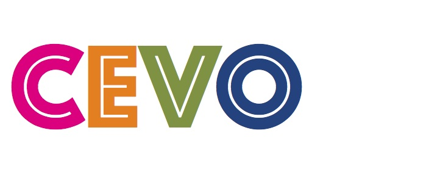

This work is licensed under a Creative Commons
Attribution 4.0 International (CC By 4.0). This copyright applies to the CEVO Specification and Ontology
and accompanying documentation in RDF.
This work is licensed under a Creative Commons
Attribution 4.0 International (CC By 4.0). This copyright applies to the CEVO Specification and Ontology
and accompanying documentation in RDF.
|
 |
This work is licensed under a Creative Commons
Attribution 4.0 International (CC By 4.0). This copyright applies to the CEVO Specification and Ontology
and accompanying documentation in RDF.
While the general analysis of named entities has received substantial research attention, the analysis of relations over named entities has not. In fact, a review of the literature on unstructured as well as structured data revealed a deficiency in research on the abstract conceptualization required to organize relations. We believe that such an abstract conceptualization can benefit various communities and applications such as natural language processing, information extraction, machine learning and ontology engineering. Thus, herein we present CEVO (i.e., a comprehensive event ontology) built on Levin's conceptual hierarchy of English verbs that categorizes verbs with the shared meaning and syntactic behavior. We present the fundamental concepts and requirements for this ontology.
For more information and citing cevo, check out the following article:
Saeedeh Shekarpour, Faisal Alshargi, Valerie L. Shalin, Krishnaprasad Thirunarayan, Amit P. Sheth: CEVO: Comprehensive EVent Ontology Enhancing Cognitive Annotation. CoRR abs/1701.05625 (2017)
IRI: https://w3id.org/cevo/Admire
IRI: http://purl.org/dc/terms/Agent
IRI: http://purl.org/dc/terms/AgentClass
IRI: https://w3id.org/cevo/Amalgamate
IRI: https://w3id.org/cevo/Amuse
IRI: https://w3id.org/cevo/Appear
IRI: https://w3id.org/cevo/Appearance
IRI: https://w3id.org/cevo/Appearance_Disappearance_and_Occurrence
IRI: http://purl.org/dc/terms/BibliographicResource
IRI: https://w3id.org/cevo/Bodily_Processes
IRI: https://w3id.org/cevo/Bodily_State_and_Damage_to_the_Body
IRI: https://w3id.org/cevo/Body-Internal_States_of_Existence
IRI: https://w3id.org/cevo/Braid
IRI: https://w3id.org/cevo//#Bring/Take
IRI: https://w3id.org/cevo/Build
IRI: https://w3id.org/cevo/Bulge
IRI: https://w3id.org/cevo/Butter
IRI: https://w3id.org/cevo/Calibratable_Changes_of_State
IRI: https://w3id.org/cevo/Captain
IRI: https://w3id.org/cevo/Caring_for_a_Specific_Body_Part
IRI: https://w3id.org/cevo/Caring_for_the_Whole_Body
IRI: https://w3id.org/cevo/Carve
IRI: https://w3id.org/cevo/Change_of_Bodily_State
IRI: https://w3id.org/cevo/Change_of_Possession
IRI: https://w3id.org/cevo/Change_of_State
IRI: https://w3id.org/cevo/Characterize
IRI: https://w3id.org/cevo/Cheat
IRI: https://w3id.org/cevo/Cling
IRI: https://w3id.org/cevo/Communication
IRI: https://w3id.org/cevo/Complete
IRI: https://w3id.org/cevo/Contact_by_Impact
IRI: https://w3id.org/cevo/Contiguous_Location
IRI: https://w3id.org/cevo/Contribute
IRI: https://w3id.org/cevo/Cooking
IRI: https://w3id.org/cevo/Correspond
IRI: https://w3id.org/cevo/Crane
IRI: https://w3id.org/cevo/Creation_and_Transformation
IRI: https://w3id.org/cevo/Debone
IRI: https://w3id.org/cevo/Destroy
IRI: https://w3id.org/cevo/Differ
IRI: https://w3id.org/cevo/Disassemble
IRI: https://w3id.org/cevo/Dressing
IRI: https://w3id.org/cevo/Emission
IRI: https://w3id.org/cevo/Entity-Specific_Change_of_State
IRI: https://w3id.org/cevo/Entity-Specific_Modes_of_Being
IRI: https://w3id.org/cevo/Event
IRI: https://w3id.org/cevo/Exchange
IRI: https://w3id.org/cevo/Exerting_Force:Push/Pull
IRI: https://w3id.org/cevo/Exhale
IRI: https://w3id.org/cevo/Exist
IRI: https://w3id.org/cevo/Existence
IRI: https://w3id.org/cevo/Feeding
IRI: http://purl.org/dc/terms/FileFormat
IRI: https://w3id.org/cevo/Fill
IRI: https://w3id.org/cevo/Floss
IRI: http://purl.org/dc/terms/Frequency
IRI: https://w3id.org/cevo//#Gestures/Signs_Involving_Body_Parts
IRI: https://w3id.org/cevo/Get
IRI: https://w3id.org/cevo/Groom
IRI: https://w3id.org/cevo/Grooming_and_Bodily_Care
IRI: https://w3id.org/cevo/Herd
IRI: https://w3id.org/cevo/Hurt
IRI: https://w3id.org/cevo/Image_Creation
IRI: https://w3id.org/cevo/Inherently_Directed_Motion
IRI: https://w3id.org/cevo/Instrument_of_Communication
IRI: https://w3id.org/cevo/Involving_the_Body
IRI: https://w3id.org/cevo/Judgment
IRI: http://purl.org/dc/terms/Jurisdiction
IRI: https://w3id.org/cevo/Keep
IRI: http://purl.org/dc/terms/LicenseDocument
IRI: http://purl.org/dc/terms/LinguisticSystem
IRI: http://purl.org/dc/terms/Location
IRI: http://purl.org/dc/terms/LocationPeriodOrJurisdiction
IRI: https://w3id.org/cevo/Manner
IRI: https://w3id.org/cevo/Manner_of_Speaking
IRI: https://w3id.org/cevo/Marvel
IRI: https://w3id.org/cevo/Masquerade
IRI: http://purl.org/dc/terms/MediaType
IRI: http://purl.org/dc/terms/MediaTypeOrExtent
IRI: http://purl.org/dc/terms/MethodOfAccrual
IRI: http://purl.org/dc/terms/MethodOfInstruction
IRI: https://w3id.org/cevo/Modes_of_Being_Involving_Motion
IRI: https://w3id.org/cevo/Motion
IRI: https://w3id.org/cevo/Motion_Using_a_Vehicle
IRI: https://w3id.org/cevo/Nonverbal_Expression
IRI: https://w3id.org/cevo/Other_Alternating_Verbs_of_Change_of_State
IRI: https://w3id.org/cevo/Perception
IRI: https://w3id.org/cevo/Performance
IRI: http://purl.org/dc/terms/PeriodOfTime
IRI: http://purl.org/dc/terms/PhysicalMedium
IRI: http://purl.org/dc/terms/PhysicalResource
IRI: https://w3id.org/cevo/Pit
IRI: https://w3id.org/cevo/Pocket
IRI: http://purl.org/dc/terms/Policy
IRI: https://w3id.org/cevo/Predicative_Complements
IRI: https://w3id.org/cevo/Preparing
IRI: http://purl.org/dc/terms/ProvenanceStatement
IRI: https://w3id.org/cevo/Providing
IRI: https://w3id.org/cevo/Putting
IRI: https://w3id.org/cevo/Putting_in_a_Spatial_Configuration
IRI: https://w3id.org/cevo/Putting_with_a_Specified_Direction
IRI: https://w3id.org/cevo/Reflexive_Verbs_of_Appearance
IRI: https://w3id.org/cevo/Remove
IRI: http://purl.org/dc/terms/RightsStatement
IRI: https://w3id.org/cevo/Run
IRI: https://w3id.org/cevo/Rushing
IRI: https://w3id.org/cevo/Separate
IRI: https://w3id.org/cevo/Separating_and_Disassembling
IRI: https://w3id.org/cevo/Shake
IRI: https://w3id.org/cevo/Simple_Verbs_of_Dressing
IRI: http://purl.org/dc/terms/SizeOrDuration
IRI: https://w3id.org/cevo/Social_Interaction
IRI: https://w3id.org/cevo/Sound_Emission
IRI: https://w3id.org/cevo/Sounds_Made_by_Animals
IRI: https://w3id.org/cevo/Spatial_Configuration
IRI: https://w3id.org/cevo//#Spray/Load
IRI: http://purl.org/dc/terms/Standard
IRI: https://w3id.org/cevo/Steal
IRI: https://w3id.org/cevo/Stimulus_Subject_Perception
IRI: https://w3id.org/cevo/Suffocate
IRI: https://w3id.org/cevo/Talk
IRI: https://w3id.org/cevo/Tape
IRI: https://w3id.org/cevo/Tell
IRI: https://w3id.org/cevo/That_Are_Not_Vehicle_Names
IRI: https://w3id.org/cevo/That_Are_Vehicle_Names
IRI: https://w3id.org/cevo/Throw
IRI: https://w3id.org/cevo/Tingle
IRI: https://w3id.org/cevo/Transcribe
IRI: https://w3id.org/cevo/Turn
IRI: https://w3id.org/cevo/Wink
IRI: https://w3id.org/cevo/Wipe
IRI: http://purl.org/dc/terms/accessRights
IRI: http://purl.org/dc/terms/accrualMethod
IRI: http://purl.org/dc/terms/accrualPeriodicity
IRI: http://purl.org/dc/terms/accrualPolicy
IRI: http://purl.org/dc/terms/audience
IRI: http://purl.org/dc/terms/educationLevel
IRI: http://purl.org/dc/terms/conformsTo
IRI: http://purl.org/dc/terms/contributor
IRI: http://purl.org/dc/terms/coverage
IRI: http://purl.org/dc/terms/creator
IRI: http://purl.org/dc/terms/extent
IRI: http://purl.org/dc/terms/format
IRI: http://purl.org/dc/terms/instructionalMethod
IRI: http://purl.org/dc/terms/language
IRI: http://purl.org/dc/terms/license
IRI: http://purl.org/dc/terms/mediator
IRI: http://purl.org/dc/terms/medium
IRI: http://purl.org/dc/terms/provenance
IRI: http://purl.org/dc/terms/publisher
IRI: http://purl.org/dc/terms/rights
IRI: http://purl.org/dc/terms/rightsHolder
IRI: http://purl.org/dc/terms/spatial
IRI: http://purl.org/dc/terms/temporal
IRI: http://purl.org/dc/terms/type
IRI: http://purl.org/dc/terms/alternative
IRI: http://purl.org/dc/terms/bibliographicCitation
IRI: http://purl.org/dc/terms/date
IRI: http://purl.org/dc/terms/dateAccepted
IRI: http://purl.org/dc/terms/available
IRI: http://purl.org/dc/terms/dateCopyrighted
IRI: http://purl.org/dc/terms/created
IRI: http://purl.org/dc/terms/issued
IRI: http://purl.org/dc/terms/modified
IRI: http://purl.org/dc/terms/dateSubmitted
IRI: http://purl.org/dc/terms/valid
IRI: http://purl.org/dc/terms/identifier
IRI: http://purl.org/dc/terms/title
IRI: https://w3id.org/cevo/verb/blackberry
IRI: https://w3id.org/cevo/verb/converse
IRI: https://w3id.org/cevo/verb/abandon
IRI: https://w3id.org/cevo/verb/abash
IRI: https://w3id.org/cevo/verb/abate
IRI: https://w3id.org/cevo/verb/abduct
IRI: https://w3id.org/cevo/verb/abound
IRI: https://w3id.org/cevo/verb/absolve
IRI: http://purl.org/dc/terms/abstract
IRI: https://w3id.org/cevo/verb/abstract
IRI: https://w3id.org/cevo/verb/abut
IRI: https://w3id.org/cevo/verb/accept
IRI: http://purl.org/dc/terms/accessRights
IRI: https://w3id.org/cevo/verb/accompany
IRI: http://purl.org/dc/terms/accrualMethod
IRI: http://purl.org/dc/terms/accrualPeriodicity
IRI: http://purl.org/dc/terms/accrualPolicy
IRI: https://w3id.org/cevo/verb/acknowledge
IRI: https://w3id.org/cevo/verb/acquit
IRI: https://w3id.org/cevo/verb/act
IRI: https://w3id.org/cevo/verb/address
IRI: https://w3id.org/cevo/verb/adhere
IRI: https://w3id.org/cevo/verb/adjoin
IRI: https://w3id.org/cevo/verb/adjudge
IRI: https://w3id.org/cevo/verb/adjudicate
IRI: https://w3id.org/cevo/administer
IRI: https://w3id.org/cevo/verb/admit
IRI: https://w3id.org/cevo/verb/admonish
IRI: https://w3id.org/cevo/verb/adopt
IRI: https://w3id.org/cevo/verb/adorn
IRI: https://w3id.org/cevo/verb/advertise
IRI: https://w3id.org/cevo/verb/advise
IRI: https://w3id.org/cevo/verb/affect
IRI: https://w3id.org/cevo/affiliate
IRI: https://w3id.org/cevo/verb/afflict
IRI: https://w3id.org/cevo/verb/affront
IRI: https://w3id.org/cevo/age
IRI: http://purl.org/dc/terms/Agent
IRI: https://w3id.org/cevo/verb/aggravate
IRI: https://w3id.org/cevo/verb/aggregate
IRI: https://w3id.org/cevo/verb/agitate
IRI: https://w3id.org/cevo/verb/agonize
IRI: https://w3id.org/cevo/verb/agree
IRI: https://w3id.org/cevo/air
IRI: https://w3id.org/cevo/verb/airmail
IRI: https://w3id.org/cevo/verb/alarm
IRI: https://w3id.org/cevo/verb/alert
IRI: https://w3id.org/cevo/verb/alienate
IRI: https://w3id.org/cevo/verb/allocate
IRI: https://w3id.org/cevo/verb/allot
IRI: https://w3id.org/cevo/verb/allow
IRI: https://w3id.org/cevo/verb/alter
IRI: https://w3id.org/cevo/verb/alternate
IRI: http://purl.org/dc/terms/alternative
IRI: https://w3id.org/cevo/verb/amalgamate
IRI: https://w3id.org/cevo/verb/amass
IRI: https://w3id.org/cevo/verb/amaze
IRI: https://w3id.org/cevo/verb/amuse
IRI: https://w3id.org/cevo/verb/analyze
IRI: https://w3id.org/cevo/verb/anchor
IRI: https://w3id.org/cevo/verb/annihilate
IRI: https://w3id.org/cevo/verb/announce
IRI: https://w3id.org/cevo/verb/annoy
IRI: https://w3id.org/cevo/verb/antagonize
IRI: https://w3id.org/cevo/verb/antique
IRI: https://w3id.org/cevo/verb/appall
IRI: https://w3id.org/cevo/verb/appease
IRI: https://w3id.org/cevo/verb/applique
IRI: https://w3id.org/cevo/verb/appoint
IRI: https://w3id.org/cevo/verb/appraise
IRI: https://w3id.org/cevo/verb/appreciate
IRI: https://w3id.org/cevo/verb/apprentice
IRI: https://w3id.org/cevo/verb/arch_back_neck
IRI: https://w3id.org/cevo/verb/archive
IRI: https://w3id.org/cevo/verb/argue
IRI: https://w3id.org/cevo/verb/arise
IRI: https://w3id.org/cevo/verb/arouse
IRI: https://w3id.org/cevo/verb/arrive
IRI: https://w3id.org/cevo/verb/articulate
IRI: https://w3id.org/cevo/verb/ascend
IRI: https://w3id.org/cevo/verb/ask
IRI: https://w3id.org/cevo/verb/asphalt
IRI: https://w3id.org/cevo/verb/assassinate
IRI: https://w3id.org/cevo/verb/assert
IRI: https://w3id.org/cevo/verb/assess
IRI: https://w3id.org/cevo/verb/assign
IRI: https://w3id.org/cevo/verb/associate
IRI: https://w3id.org/cevo/verb/assuage
IRI: https://w3id.org/cevo/verb/assume
IRI: https://w3id.org/cevo/verb/astonish
IRI: https://w3id.org/cevo/verb/astound
IRI: https://w3id.org/cevo/atrophy
IRI: https://w3id.org/cevo/verb/attire
IRI: http://purl.org/dc/terms/audience
IRI: http://purl.org/dc/terms/educationLevel
IRI: https://w3id.org/cevo/verb/audit
IRI: https://w3id.org/cevo/verb/autograph
IRI: https://w3id.org/cevo/verb/avoid
IRI: https://w3id.org/cevo/verb/avow
IRI: https://w3id.org/cevo/verb/awake
IRI: https://w3id.org/cevo/verb/awaken
IRI: https://w3id.org/cevo/verb/award
IRI: https://w3id.org/cevo/verb/baa
IRI: https://w3id.org/cevo/verb/babble
IRI: https://w3id.org/cevo/backbite
IRI: https://w3id.org/cevo/verb/backpack
IRI: https://w3id.org/cevo/verb/baffle
IRI: https://w3id.org/cevo/verb/bail
IRI: https://w3id.org/cevo/verb/bait
IRI: https://w3id.org/cevo/verb/bake_cake
IRI: https://w3id.org/cevo/verb/balance
IRI: https://w3id.org/cevo/verb/balloon
IRI: https://w3id.org/cevo/verb/bandage
IRI: https://w3id.org/cevo/verb/bang
IRI: https://w3id.org/cevo/verb/banish
IRI: https://w3id.org/cevo/verb/bank
IRI: https://w3id.org/cevo/verb/banquet
IRI: https://w3id.org/cevo/verb/banter
IRI: https://w3id.org/cevo/verb/baptize
IRI: https://w3id.org/cevo/verb/barbecue
IRI: https://w3id.org/cevo/verb/bare_teeth
IRI: https://w3id.org/cevo/verb/bargain
IRI: https://w3id.org/cevo/verb/barge
IRI: https://w3id.org/cevo/verb/bark
IRI: https://w3id.org/cevo/verb/bark_shin
IRI: https://w3id.org/cevo/verb/barter
IRI: https://w3id.org/cevo/verb/bat_eyelashes
IRI: https://w3id.org/cevo/verb/batter
IRI: https://w3id.org/cevo/verb/battle
IRI: https://w3id.org/cevo/verb/bawl
IRI: https://w3id.org/cevo/verb/bay
IRI: https://w3id.org/cevo/verb/beach
IRI: https://w3id.org/cevo/verb/beam
IRI: https://w3id.org/cevo/verb/beat
IRI: https://w3id.org/cevo/verb/beat_feet
IRI: https://w3id.org/cevo/verb/beep
IRI: https://w3id.org/cevo/verb/beget
IRI: https://w3id.org/cevo/verb/begin
IRI: https://w3id.org/cevo/verb/beguile
IRI: https://w3id.org/cevo/verb/behave
IRI: https://w3id.org/cevo/verb/belch
IRI: https://w3id.org/cevo/verb/believe
IRI: https://w3id.org/cevo/verb/bellow
IRI: https://w3id.org/cevo/verb/bench
IRI: https://w3id.org/cevo/verb/bend
IRI: https://w3id.org/cevo/verb/bequeath
IRI: https://w3id.org/cevo/verb/bereave
IRI: https://w3id.org/cevo/verb/berry
IRI: https://w3id.org/cevo/verb/berth
IRI: https://w3id.org/cevo/verb/bestrew
IRI: https://w3id.org/cevo/verb/bewilder
IRI: https://w3id.org/cevo/verb/bewitch
IRI: http://purl.org/dc/terms/bibliographicCitation
IRI: https://w3id.org/cevo/verb/bicker
IRI: https://w3id.org/cevo/verb/bicycle
IRI: https://w3id.org/cevo/verb/bike
IRI: https://w3id.org/cevo/verb/bill
IRI: https://w3id.org/cevo/verb/billet
IRI: https://w3id.org/cevo/verb/billow
IRI: https://w3id.org/cevo/verb/birch
IRI: https://w3id.org/cevo/verb/birdnest
IRI: https://w3id.org/cevo/verb/bite_lip
IRI: https://w3id.org/cevo/verb/bivouac
IRI: https://w3id.org/cevo/verb/blanch
IRI: https://w3id.org/cevo/verb/blanket
IRI: https://w3id.org/cevo/verb/blare
IRI: https://w3id.org/cevo/verb/blast
IRI: https://w3id.org/cevo/verb/blat
IRI: https://w3id.org/cevo/verb/blaze
IRI: https://w3id.org/cevo/verb/bleat
IRI: https://w3id.org/cevo/verb/bleed
IRI: https://w3id.org/cevo/verb/blend_drink
IRI: https://w3id.org/cevo/verb/blindfold
IRI: https://w3id.org/cevo/verb/blink
IRI: https://w3id.org/cevo/verb/blink_eye
IRI: https://w3id.org/cevo/verb/blister
IRI: https://w3id.org/cevo/verb/blitz
IRI: https://w3id.org/cevo/verb/block
IRI: https://w3id.org/cevo/verb/bloom
IRI: https://w3id.org/cevo/verb/blossom
IRI: https://w3id.org/cevo/verb/blow
IRI: https://w3id.org/cevo/verb/blow_bubbles_glass
IRI: https://w3id.org/cevo/verb/blow_nose
IRI: https://w3id.org/cevo/verb/bludgeon
IRI: https://w3id.org/cevo/blur
IRI: https://w3id.org/cevo/verb/blush
IRI: https://w3id.org/cevo/verb/boast
IRI: https://w3id.org/cevo/verb/boat
IRI: https://w3id.org/cevo/verb/bob
IRI: https://w3id.org/cevo/verb/bob_hair
IRI: https://w3id.org/cevo/bobsled
IRI: https://w3id.org/cevo/verb/boggle
IRI: https://w3id.org/cevo/verb/boil
IRI: https://w3id.org/cevo/verb/boil_egg_tea
IRI: https://w3id.org/cevo/verb/bonk
IRI: https://w3id.org/cevo/verb/boogie
IRI: https://w3id.org/cevo/verb/boom
IRI: https://w3id.org/cevo/verb/border
IRI: https://w3id.org/cevo/verb/boss
IRI: https://w3id.org/cevo/verb/bottle
IRI: https://w3id.org/cevo/verb/bottlefeed
IRI: https://w3id.org/cevo/verb/bound
IRI: https://w3id.org/cevo/verb/boycott
IRI: https://w3id.org/cevo/verb/bracket
IRI: https://w3id.org/cevo/verb/brag
IRI: https://w3id.org/cevo/verb/braid_hair
IRI: https://w3id.org/cevo/verb/brain
IRI: https://w3id.org/cevo/verb/braise
IRI: https://w3id.org/cevo/verb/brand
IRI: https://w3id.org/cevo/verb/brawl
IRI: https://w3id.org/cevo/verb/bray
IRI: https://w3id.org/cevo/verb/bread
IRI: https://w3id.org/cevo/verb/break_of_a_habit
IRI: https://w3id.org/cevo/verb/breakfast
IRI: https://w3id.org/cevo/verb/breastfeed
IRI: https://w3id.org/cevo/verb/breathe
IRI: https://w3id.org/cevo/verb/brew_coffee
IRI: https://w3id.org/cevo/verb/brick
IRI: https://w3id.org/cevo/verb/bridge
IRI: https://w3id.org/cevo/verb/bridle
IRI: https://w3id.org/cevo/verb/bring
IRI: https://w3id.org/cevo/verb/bristle
IRI: https://w3id.org/cevo/verb/broil
IRI: https://w3id.org/cevo/verb/bronze
IRI: https://w3id.org/cevo/verb/brown
IRI: https://w3id.org/cevo/verb/brunch
IRI: https://w3id.org/cevo/verb/brush
IRI: https://w3id.org/cevo/verb/brush_hair
IRI: https://w3id.org/cevo/verb/brush_teeth
IRI: https://w3id.org/cevo/verb/bubble
IRI: https://w3id.org/cevo/verb/buck
IRI: https://w3id.org/cevo/verb/buckle
IRI: https://w3id.org/cevo/verb/buff
IRI: https://w3id.org/cevo/verb/buffet
IRI: https://w3id.org/cevo/verb/build
IRI: https://w3id.org/cevo/verb/bulge
IRI: https://w3id.org/cevo/verb/bully
IRI: https://w3id.org/cevo/verb/bump
IRI: https://w3id.org/cevo/verb/burble
IRI: https://w3id.org/cevo/verb/burden
IRI: https://w3id.org/cevo/verb/burgle
IRI: https://w3id.org/cevo/verb/burp
IRI: https://w3id.org/cevo/verb/burr
IRI: https://w3id.org/cevo/verb/burrow
IRI: https://w3id.org/cevo/verb/burst
IRI: https://w3id.org/cevo/verb/bus
IRI: https://w3id.org/cevo/verb/bustle
IRI: https://w3id.org/cevo/verb/butler
IRI: https://w3id.org/cevo/verb/butter
IRI: https://w3id.org/cevo/verb/button
IRI: https://w3id.org/cevo/verb/buttonhole
IRI: https://w3id.org/cevo/verb/buzz
IRI: https://w3id.org/cevo/verb/cab
IRI: https://w3id.org/cevo/verb/cable
IRI: https://w3id.org/cevo/verb/cackle
IRI: https://w3id.org/cevo/verb/caddy
IRI: https://w3id.org/cevo/verb/cage
IRI: https://w3id.org/cevo/verb/call
IRI: https://w3id.org/cevo/calumniate
IRI: https://w3id.org/cevo/verb/calve
IRI: https://w3id.org/cevo/verb/camouflage
IRI: https://w3id.org/cevo/verb/canoe
IRI: https://w3id.org/cevo/verb/canonize
IRI: https://w3id.org/cevo/verb/canter
IRI: https://w3id.org/cevo/verb/canvass
IRI: https://w3id.org/cevo/verb/cap
IRI: https://w3id.org/cevo/capsize
IRI: https://w3id.org/cevo/verb/captain
IRI: https://w3id.org/cevo/verb/captivate
IRI: https://w3id.org/cevo/verb/capture
IRI: https://w3id.org/cevo/verb/caravan
IRI: https://w3id.org/cevo/verb/caress
IRI: https://w3id.org/cevo/verb/carol
IRI: https://w3id.org/cevo/verb/cascade
IRI: https://w3id.org/cevo/verb/case
IRI: https://w3id.org/cevo/verb/cast
IRI: https://w3id.org/cevo/castigate
IRI: https://w3id.org/cevo/verb/catapult
IRI: https://w3id.org/cevo/verb/catnap
IRI: https://w3id.org/cevo/verb/caulk
IRI: https://w3id.org/cevo/verb/cause
IRI: https://w3id.org/cevo/verb/caution
IRI: https://w3id.org/cevo/verb/cavort
IRI: https://w3id.org/cevo/verb/caw
IRI: https://w3id.org/cevo/verb/cease
IRI: https://w3id.org/cevo/verb/cede
IRI: https://w3id.org/cevo/celebrate
IRI: https://w3id.org/cevo/verb/cellar
IRI: https://w3id.org/cevo/verb/cement
IRI: https://w3id.org/cevo/verb/certify
IRI: https://w3id.org/cevo/verb/chagrin
IRI: https://w3id.org/cevo/verb/chain
IRI: https://w3id.org/cevo/verb/chalk
IRI: https://w3id.org/cevo/verb/champion
IRI: https://w3id.org/cevo/verb/change
IRI: https://w3id.org/cevo/verb/channel
IRI: https://w3id.org/cevo/verb/chant
IRI: https://w3id.org/cevo/verb/chant_prayer
IRI: https://w3id.org/cevo/verb/chaperone
IRI: https://w3id.org/cevo/char
IRI: https://w3id.org/cevo/verb/characterize
IRI: https://w3id.org/cevo/verb/charbroil
IRI: https://w3id.org/cevo/verb/charcoal
IRI: https://w3id.org/cevo/verb/charcoal-broil
IRI: https://w3id.org/cevo/verb/charge_with_a_task
IRI: https://w3id.org/cevo/verb/chariot
IRI: https://w3id.org/cevo/verb/charm
IRI: https://w3id.org/cevo/verb/charter
IRI: https://w3id.org/cevo/verb/chase
IRI: https://w3id.org/cevo/chastise
IRI: https://w3id.org/cevo/verb/chat
IRI: https://w3id.org/cevo/verb/chatter
IRI: https://w3id.org/cevo/verb/chauffeur
IRI: https://w3id.org/cevo/verb/cheat
IRI: https://w3id.org/cevo/verb/check
IRI: https://w3id.org/cevo/verb/check_on
IRI: https://w3id.org/cevo/verb/cheep
IRI: https://w3id.org/cevo/verb/chill
IRI: https://w3id.org/cevo/verb/chime
IRI: https://w3id.org/cevo/verb/chink
IRI: https://w3id.org/cevo/verb/chip_potatoes
IRI: https://w3id.org/cevo/verb/chip_tooth
IRI: https://w3id.org/cevo/verb/chir
IRI: https://w3id.org/cevo/verb/chirp
IRI: https://w3id.org/cevo/verb/chirrup
IRI: https://w3id.org/cevo/verb/chisel
IRI: https://w3id.org/cevo/verb/chitchat
IRI: https://w3id.org/cevo/verb/chitter
IRI: https://w3id.org/cevo/verb/chomp
IRI: https://w3id.org/cevo/verb/choose
IRI: https://w3id.org/cevo/verb/choreograph_dance
IRI: https://w3id.org/cevo/verb/chortle
IRI: https://w3id.org/cevo/verb/christen
IRI: https://w3id.org/cevo/verb/chrome
IRI: https://w3id.org/cevo/verb/chuck
IRI: https://w3id.org/cevo/verb/chuckle
IRI: https://w3id.org/cevo/verb/chug
IRI: https://w3id.org/cevo/verb/churn
IRI: https://w3id.org/cevo/verb/cite
IRI: https://w3id.org/cevo/verb/clack
IRI: https://w3id.org/cevo/verb/clad
IRI: https://w3id.org/cevo/verb/clamber
IRI: https://w3id.org/cevo/verb/clamp
IRI: https://w3id.org/cevo/verb/clang
IRI: https://w3id.org/cevo/verb/clank
IRI: https://w3id.org/cevo/verb/clap
IRI: https://w3id.org/cevo/verb/clap_hands
IRI: https://w3id.org/cevo/verb/clash
IRI: https://w3id.org/cevo/verb/class
IRI: https://w3id.org/cevo/verb/classify
IRI: https://w3id.org/cevo/verb/clatter
IRI: https://w3id.org/cevo/verb/cleanse
IRI: https://w3id.org/cevo/verb/clear_path
IRI: https://w3id.org/cevo/verb/cleave
IRI: https://w3id.org/cevo/verb/clench_fists
IRI: https://w3id.org/cevo/verb/clerk
IRI: https://w3id.org/cevo/verb/click
IRI: https://w3id.org/cevo/verb/click_heels_tongue
IRI: https://w3id.org/cevo/verb/climb
IRI: https://w3id.org/cevo/verb/cling
IRI: https://w3id.org/cevo/verb/clink
IRI: https://w3id.org/cevo/verb/clip_nails
IRI: https://w3id.org/cevo/verb/clobber
IRI: https://w3id.org/cevo/verb/clog
IRI: https://w3id.org/cevo/verb/cloister
IRI: https://w3id.org/cevo/verb/clomp
IRI: https://w3id.org/cevo/close
IRI: https://w3id.org/cevo/verb/close_eyes
IRI: https://w3id.org/cevo/verb/cluck
IRI: https://w3id.org/cevo/verb/clump
IRI: https://w3id.org/cevo/verb/clutch
IRI: https://w3id.org/cevo/verb/clutter
IRI: https://w3id.org/cevo/verb/coach
IRI: https://w3id.org/cevo/verb/coalesce
IRI: https://w3id.org/cevo/verb/cock_head
IRI: https://w3id.org/cevo/verb/coddle
IRI: https://w3id.org/cevo/verb/coexist
IRI: https://w3id.org/cevo/verb/coin
IRI: https://w3id.org/cevo/verb/coincide
IRI: https://w3id.org/cevo/verb/coldcream_face
IRI: https://w3id.org/cevo/verb/collaborate
IRI: https://w3id.org/cevo/collapse
IRI: https://w3id.org/cevo/verb/collide
IRI: https://w3id.org/cevo/verb/color
IRI: https://w3id.org/cevo/verb/comb
IRI: https://w3id.org/cevo/verb/comb_hair
IRI: https://w3id.org/cevo/verb/combat
IRI: https://w3id.org/cevo/verb/combine
IRI: https://w3id.org/cevo/verb/come
IRI: https://w3id.org/cevo/verb/comfort
IRI: https://w3id.org/cevo/verb/commence
IRI: https://w3id.org/cevo/verb/commingle
IRI: https://w3id.org/cevo/verb/commiserate
IRI: https://w3id.org/cevo/verb/communicate
IRI: https://w3id.org/cevo/verb/compare
IRI: https://w3id.org/cevo/verb/compete
IRI: https://w3id.org/cevo/verb/compile
IRI: https://w3id.org/cevo/verb/complain
IRI: https://w3id.org/cevo/verb/complete
IRI: https://w3id.org/cevo/compliment
IRI: https://w3id.org/cevo/verb/compose
IRI: https://w3id.org/cevo/verb/compose_symphony
IRI: https://w3id.org/cevo/verb/compress
IRI: https://w3id.org/cevo/verb/compute
IRI: https://w3id.org/cevo/verb/concatenate
IRI: https://w3id.org/cevo/verb/conceal
IRI: https://w3id.org/cevo/verb/concede
IRI: https://w3id.org/cevo/verb/concern
IRI: https://w3id.org/cevo/verb/concoct
IRI: https://w3id.org/cevo/verb/concur
IRI: https://w3id.org/cevo/condense
IRI: https://w3id.org/cevo/verb/condition_hair
IRI: https://w3id.org/cevo/verb/conduct
IRI: https://w3id.org/cevo/verb/confabulate
IRI: https://w3id.org/cevo/verb/confederate
IRI: https://w3id.org/cevo/verb/confer
IRI: https://w3id.org/cevo/verb/confide
IRI: https://w3id.org/cevo/verb/confirm
IRI: https://w3id.org/cevo/verb/confiscate
IRI: https://w3id.org/cevo/verb/conflict
IRI: http://purl.org/dc/terms/conformsTo
IRI: https://w3id.org/cevo/verb/confound
IRI: https://w3id.org/cevo/verb/confuse
IRI: https://w3id.org/cevo/verb/conga
IRI: https://w3id.org/cevo/congratulate
IRI: https://w3id.org/cevo/verb/congregate
IRI: https://w3id.org/cevo/verb/conjecture
IRI: https://w3id.org/cevo/verb/conjoin
IRI: https://w3id.org/cevo/verb/connect
IRI: https://w3id.org/cevo/verb/consecrate
IRI: https://w3id.org/cevo/verb/consider
IRI: https://w3id.org/cevo/verb/console
IRI: https://w3id.org/cevo/verb/consolidate
IRI: https://w3id.org/cevo/verb/consort
IRI: https://w3id.org/cevo/verb/construct
IRI: https://w3id.org/cevo/verb/consult
IRI: https://w3id.org/cevo/verb/consume
IRI: https://w3id.org/cevo/verb/contain
IRI: https://w3id.org/cevo/verb/contaminate
IRI: https://w3id.org/cevo/verb/content
IRI: https://w3id.org/cevo/verb/continue
IRI: https://w3id.org/cevo/contract
IRI: https://w3id.org/cevo/verb/contrast
IRI: https://w3id.org/cevo/contribute
IRI: http://purl.org/dc/terms/contributor
IRI: https://w3id.org/cevo/verb/convene
IRI: https://w3id.org/cevo/verb/convert
IRI: https://w3id.org/cevo/verb/convince
IRI: https://w3id.org/cevo/verb/convulse
IRI: https://w3id.org/cevo/verb/coo
IRI: https://w3id.org/cevo/verb/cook_meal
IRI: https://w3id.org/cevo/verb/coop
IRI: https://w3id.org/cevo/verb/cooperate
IRI: https://w3id.org/cevo/verb/copy
IRI: https://w3id.org/cevo/verb/cork
IRI: https://w3id.org/cevo/verb/corral
IRI: https://w3id.org/cevo/verb/correlate
IRI: https://w3id.org/cevo/verb/correspond
IRI: https://w3id.org/cevo/verb/cough
IRI: https://w3id.org/cevo/verb/counsel
IRI: https://w3id.org/cevo/verb/count
IRI: https://w3id.org/cevo/verb/court
IRI: https://w3id.org/cevo/verb/cover
IRI: http://purl.org/dc/terms/coverage
IRI: https://w3id.org/cevo/verb/covet
IRI: https://w3id.org/cevo/verb/cower
IRI: https://w3id.org/cevo/verb/crack
IRI: https://w3id.org/cevo/verb/crackle
IRI: https://w3id.org/cevo/verb/cram
IRI: https://w3id.org/cevo/verb/crane_neck
IRI: https://w3id.org/cevo/verb/crash
IRI: https://w3id.org/cevo/verb/crate
IRI: https://w3id.org/cevo/verb/crayon
IRI: https://w3id.org/cevo/verb/creak
IRI: https://w3id.org/cevo/verb/crease
IRI: http://purl.org/dc/terms/creator
IRI: https://w3id.org/cevo/verb/credit
IRI: https://w3id.org/cevo/verb/creep
IRI: https://w3id.org/cevo/verb/crepitate
IRI: https://w3id.org/cevo/verb/crew
IRI: https://w3id.org/cevo/verb/crimp_hair
IRI: https://w3id.org/cevo/verb/crinkle
IRI: https://w3id.org/cevo/verb/cripple
IRI: https://w3id.org/cevo/verb/crisp
IRI: https://w3id.org/cevo/verb/criss-cross
IRI: https://w3id.org/cevo/criticize
IRI: https://w3id.org/cevo/verb/croak
IRI: https://w3id.org/cevo/verb/crochet
IRI: https://w3id.org/cevo/verb/crook_finger
IRI: https://w3id.org/cevo/verb/croon
IRI: https://w3id.org/cevo/verb/cross
IRI: https://w3id.org/cevo/verb/cross_arms_eyes_legs
IRI: https://w3id.org/cevo/verb/crouch
IRI: https://w3id.org/cevo/verb/crow
IRI: https://w3id.org/cevo/verb/crowd
IRI: https://w3id.org/cevo/verb/cruise
IRI: https://w3id.org/cevo/crumble
IRI: https://w3id.org/cevo/verb/crumple
IRI: https://w3id.org/cevo/verb/crunch
IRI: https://w3id.org/cevo/verb/cry
IRI: https://w3id.org/cevo/verb/cuckold
IRI: https://w3id.org/cevo/verb/cuckoo
IRI: https://w3id.org/cevo/verb/cuddle
IRI: https://w3id.org/cevo/verb/cudgel
IRI: https://w3id.org/cevo/verb/cultivate
IRI: https://w3id.org/cevo/verb/curl_hair
IRI: https://w3id.org/cevo/verb/curry
IRI: https://w3id.org/cevo/verb/curtain
IRI: https://w3id.org/cevo/verb/curtsey
IRI: https://w3id.org/cevo/verb/cut_hair
IRI: https://w3id.org/cevo/verb/cycle
IRI: https://w3id.org/cevo/verb/verb/dab
IRI: https://w3id.org/cevo/verb/dally
IRI: https://w3id.org/cevo/verb/dance
IRI: https://w3id.org/cevo/verb/dance_waltz
IRI: https://w3id.org/cevo/verb/dangle
IRI: https://w3id.org/cevo/verb/dapple
IRI: http://purl.org/dc/terms/date
IRI: https://w3id.org/cevo/verb/date
IRI: http://purl.org/dc/terms/dateAccepted
IRI: http://purl.org/dc/terms/available
IRI: http://purl.org/dc/terms/dateCopyrighted
IRI: http://purl.org/dc/terms/created
IRI: http://purl.org/dc/terms/issued
IRI: http://purl.org/dc/terms/modified
IRI: http://purl.org/dc/terms/dateSubmitted
IRI: http://purl.org/dc/terms/valid
IRI: https://w3id.org/cevo/verb/daub
IRI: https://w3id.org/cevo/verb/daunt
IRI: https://w3id.org/cevo/verb/dawdle
IRI: https://w3id.org/cevo/verb/dawn
IRI: https://w3id.org/cevo/verb/dazzle
IRI: http://purl.org/dc/terms/Box
IRI: http://purl.org/dc/terms/Period
IRI: http://purl.org/dc/terms/Point
IRI: http://purl.org/dc/terms/DCMIType
IRI: http://purl.org/dc/terms/DDC
IRI: https://w3id.org/cevo/verb/deaccent
IRI: https://w3id.org/cevo/verb/debark
IRI: https://w3id.org/cevo/verb/debate
IRI: https://w3id.org/cevo/verb/debone
IRI: https://w3id.org/cevo/verb/debowel
IRI: https://w3id.org/cevo/verb/debug
IRI: https://w3id.org/cevo/verb/debur
IRI: https://w3id.org/cevo/verb/decay
IRI: https://w3id.org/cevo/verb/December
IRI: https://w3id.org/cevo/verb/decimate
IRI: https://w3id.org/cevo/verb/declare
IRI: https://w3id.org/cevo/verb/declaw
IRI: https://w3id.org/cevo/decline
IRI: https://w3id.org/cevo/verb/decompose
IRI: https://w3id.org/cevo/verb/decorate
IRI: https://w3id.org/cevo/verb/decouple
IRI: https://w3id.org/cevo/verb/decrease
IRI: https://w3id.org/cevo/verb/decree
IRI: https://w3id.org/cevo/verb/deem
IRI: https://w3id.org/cevo/verb/deep-fry
IRI: https://w3id.org/cevo/verb/defat
IRI: https://w3id.org/cevo/verb/defeather
IRI: https://w3id.org/cevo/verb/define
IRI: https://w3id.org/cevo/deflate
IRI: https://w3id.org/cevo/verb/deflea
IRI: https://w3id.org/cevo/verb/deflesh
IRI: https://w3id.org/cevo/verb/defoam
IRI: https://w3id.org/cevo/verb/defog
IRI: https://w3id.org/cevo/verb/deforest
IRI: https://w3id.org/cevo/verb/defraud
IRI: https://w3id.org/cevo/verb/defrost
IRI: https://w3id.org/cevo/verb/defuzz
IRI: https://w3id.org/cevo/verb/degas
IRI: https://w3id.org/cevo/verb/degerm
IRI: https://w3id.org/cevo/verb/deglaze
IRI: https://w3id.org/cevo/degrade
IRI: https://w3id.org/cevo/verb/degrease
IRI: https://w3id.org/cevo/verb/degrit
IRI: https://w3id.org/cevo/verb/degum
IRI: https://w3id.org/cevo/verb/degut
IRI: https://w3id.org/cevo/verb/dehair
IRI: https://w3id.org/cevo/verb/dehead
IRI: https://w3id.org/cevo/verb/dehorn
IRI: https://w3id.org/cevo/verb/dehull
IRI: https://w3id.org/cevo/verb/dehusk
IRI: https://w3id.org/cevo/verb/deice
IRI: https://w3id.org/cevo/verb/deink
IRI: https://w3id.org/cevo/verb/deject
IRI: https://w3id.org/cevo/verb/delay
IRI: https://w3id.org/cevo/verb/delete
IRI: https://w3id.org/cevo/verb/delint
IRI: https://w3id.org/cevo/verb/delouse
IRI: https://w3id.org/cevo/verb/deluge
IRI: https://w3id.org/cevo/verb/deluster
IRI: https://w3id.org/cevo/verb/delve
IRI: https://w3id.org/cevo/verb/demast
IRI: https://w3id.org/cevo/verb/demonstrate
IRI: https://w3id.org/cevo/verb/demoralize
IRI: https://w3id.org/cevo/verb/denigrate
IRI: https://w3id.org/cevo/denounce
IRI: https://w3id.org/cevo/verb/denude
IRI: https://w3id.org/cevo/verb/deny
IRI: https://w3id.org/cevo/verb/depart
IRI: https://w3id.org/cevo/verb/depend
IRI: https://w3id.org/cevo/verb/deplete
IRI: https://w3id.org/cevo/verb/depopulate
IRI: https://w3id.org/cevo/verb/deport
IRI: https://w3id.org/cevo/deprecate
IRI: https://w3id.org/cevo/verb/depreciate
IRI: https://w3id.org/cevo/verb/depress
IRI: https://w3id.org/cevo/verb/deprive
IRI: https://w3id.org/cevo/verb/derat
IRI: https://w3id.org/cevo/verb/derib
IRI: https://w3id.org/cevo/verb/derind
IRI: https://w3id.org/cevo/verb/desalt
IRI: https://w3id.org/cevo/verb/descale
IRI: https://w3id.org/cevo/verb/descend
IRI: https://w3id.org/cevo/verb/describe
IRI: http://purl.org/dc/terms/description
IRI: https://w3id.org/cevo/verb/descry
IRI: https://w3id.org/cevo/verb/desert
IRI: https://w3id.org/cevo/verb/desex
IRI: https://w3id.org/cevo/verb/design
IRI: https://w3id.org/cevo/verb/designate
IRI: https://w3id.org/cevo/verb/desire
IRI: https://w3id.org/cevo/verb/despoil
IRI: https://w3id.org/cevo/verb/desprout
IRI: https://w3id.org/cevo/verb/destarch
IRI: https://w3id.org/cevo/verb/destress
IRI: https://w3id.org/cevo/verb/destroy
IRI: https://w3id.org/cevo/verb/detach
IRI: https://w3id.org/cevo/verb/detassel
IRI: https://w3id.org/cevo/verb/detect
IRI: https://w3id.org/cevo/verb/deteriorate
IRI: https://w3id.org/cevo/verb/detusk
IRI: https://w3id.org/cevo/verb/devein
IRI: https://w3id.org/cevo/verb/devour
IRI: https://w3id.org/cevo/verb/dewater
IRI: https://w3id.org/cevo/verb/dewax
IRI: https://w3id.org/cevo/verb/deworm
IRI: https://w3id.org/cevo/verb/diagnose
IRI: https://w3id.org/cevo/verb/diaper
IRI: https://w3id.org/cevo/verb/dicker
IRI: https://w3id.org/cevo/verb/dictate
IRI: https://w3id.org/cevo/verb/die
IRI: https://w3id.org/cevo/verb/differ
IRI: https://w3id.org/cevo/verb/differentiate
IRI: https://w3id.org/cevo/verb/diminish
IRI: https://w3id.org/cevo/verb/din
IRI: https://w3id.org/cevo/verb/ding
IRI: https://w3id.org/cevo/verb/direct_movie_play
IRI: https://w3id.org/cevo/verb/dirty
IRI: https://w3id.org/cevo/verb/disabuse
IRI: https://w3id.org/cevo/verb/disagree
IRI: https://w3id.org/cevo/verb/disappear
IRI: https://w3id.org/cevo/verb/disappoint
IRI: https://w3id.org/cevo/disapprove
IRI: https://w3id.org/cevo/verb/disassemble
IRI: https://w3id.org/cevo/disburse
IRI: https://w3id.org/cevo/verb/discern
IRI: https://w3id.org/cevo/verb/discharge
IRI: https://w3id.org/cevo/verb/discombobulate
IRI: https://w3id.org/cevo/verb/discomfit
IRI: https://w3id.org/cevo/verb/discompose
IRI: https://w3id.org/cevo/verb/disconcert
IRI: https://w3id.org/cevo/verb/disconnect
IRI: https://w3id.org/cevo/verb/discontinue
IRI: https://w3id.org/cevo/discourage
IRI: https://w3id.org/cevo/verb/discover
IRI: https://w3id.org/cevo/verb/disencumber
IRI: https://w3id.org/cevo/verb/disengage
IRI: https://w3id.org/cevo/verb/disentangle
IRI: https://w3id.org/cevo/verb/disgorge
IRI: https://w3id.org/cevo/verb/disgrace
IRI: https://w3id.org/cevo/verb/disgruntle
IRI: https://w3id.org/cevo/verb/disguise
IRI: https://w3id.org/cevo/verb/disgust
IRI: https://w3id.org/cevo/verb/dishearten
IRI: https://w3id.org/cevo/disillusion
IRI: https://w3id.org/cevo/verb/dislodge
IRI: https://w3id.org/cevo/verb/dismay
IRI: https://w3id.org/cevo/verb/dismiss
IRI: https://w3id.org/cevo/disparage
IRI: https://w3id.org/cevo/verb/dispirit
IRI: https://w3id.org/cevo/verb/displease
IRI: https://w3id.org/cevo/verb/dispossess
IRI: https://w3id.org/cevo/verb/dispute
IRI: https://w3id.org/cevo/verb/disquiet
IRI: https://w3id.org/cevo/verb/disrobe
IRI: https://w3id.org/cevo/verb/dissatisfy
IRI: https://w3id.org/cevo/verb/dissent
IRI: https://w3id.org/cevo/verb/dissociate
IRI: https://w3id.org/cevo/dissolve
IRI: https://w3id.org/cevo/verb/distemper
IRI: https://w3id.org/cevo/distend
IRI: https://w3id.org/cevo/verb/distill
IRI: https://w3id.org/cevo/verb/distinguish
IRI: https://w3id.org/cevo/verb/distract
IRI: https://w3id.org/cevo/verb/distress
IRI: https://w3id.org/cevo/distribute
IRI: https://w3id.org/cevo/verb/disturb
IRI: https://w3id.org/cevo/verb/dither
IRI: https://w3id.org/cevo/verb/dive
IRI: https://w3id.org/cevo/verb/diverge
IRI: https://w3id.org/cevo/verb/divest
IRI: https://w3id.org/cevo/verb/divide
IRI: https://w3id.org/cevo/verb/dock
IRI: https://w3id.org/cevo/verb/doctor
IRI: https://w3id.org/cevo/verb/dodder
IRI: https://w3id.org/cevo/verb/dodge
IRI: https://w3id.org/cevo/verb/doff
IRI: https://w3id.org/cevo/verb/dogsled
IRI: https://w3id.org/cevo/verb/doll
IRI: https://w3id.org/cevo/verb/dominate
IRI: https://w3id.org/cevo/verb/don
IRI: https://w3id.org/cevo/verb/dong
IRI: https://w3id.org/cevo/verb/doodle
IRI: https://w3id.org/cevo/double
IRI: https://w3id.org/cevo/verb/douse
IRI: https://w3id.org/cevo/verb/doze
IRI: https://w3id.org/cevo/verb/drain
IRI: https://w3id.org/cevo/verb/drape
IRI: https://w3id.org/cevo/verb/draw
IRI: https://w3id.org/cevo/verb/draw_picture
IRI: https://w3id.org/cevo/verb/drawl
IRI: https://w3id.org/cevo/verb/dredge
IRI: https://w3id.org/cevo/verb/drench
IRI: https://w3id.org/cevo/verb/dress
IRI: https://w3id.org/cevo/verb/dribble
IRI: https://w3id.org/cevo/verb/drift
IRI: https://w3id.org/cevo/verb/drill
IRI: https://w3id.org/cevo/verb/drip
IRI: https://w3id.org/cevo/verb/drive
IRI: https://w3id.org/cevo/verb/drizzle
IRI: https://w3id.org/cevo/verb/drone
IRI: https://w3id.org/cevo/verb/drool
IRI: https://w3id.org/cevo/verb/drop
IRI: https://w3id.org/cevo/verb/drowse
IRI: https://w3id.org/cevo/verb/drug
IRI: https://w3id.org/cevo/verb/drum_finger
IRI: https://w3id.org/cevo/verb/drydock
IRI: https://w3id.org/cevo/verb/duel
IRI: https://w3id.org/cevo/verb/dumbfound
IRI: https://w3id.org/cevo/verb/dump
IRI: https://w3id.org/cevo/verb/dust
IRI: https://w3id.org/cevo/verb/dye
IRI: https://w3id.org/cevo/verb/dye_hair
IRI: https://w3id.org/cevo/verb/e-mail
IRI: https://w3id.org/cevo/verb/ease
IRI: https://w3id.org/cevo/verb/eat_only
IRI: https://w3id.org/cevo/verb/echo
IRI: https://w3id.org/cevo/verb/eddy
IRI: https://w3id.org/cevo/verb/edge
IRI: https://w3id.org/cevo/verb/effervesce
IRI: https://w3id.org/cevo/verb/eject
IRI: https://w3id.org/cevo/verb/elate
IRI: https://w3id.org/cevo/verb/elect
IRI: https://w3id.org/cevo/verb/electrify
IRI: https://w3id.org/cevo/verb/electrocute
IRI: https://w3id.org/cevo/verb/elope
IRI: https://w3id.org/cevo/verb/elude
IRI: https://w3id.org/cevo/verb/emanate
IRI: https://w3id.org/cevo/verb/emancipate
IRI: https://w3id.org/cevo/verb/embarrass
IRI: https://w3id.org/cevo/verb/embellish
IRI: https://w3id.org/cevo/verb/embezzle
IRI: https://w3id.org/cevo/verb/emblazon
IRI: https://w3id.org/cevo/verb/embolden
IRI: https://w3id.org/cevo/verb/emboss
IRI: https://w3id.org/cevo/verb/embrace
IRI: https://w3id.org/cevo/verb/embroider
IRI: https://w3id.org/cevo/verb/emcee
IRI: https://w3id.org/cevo/verb/emerge
IRI: https://w3id.org/cevo/verb/employ
IRI: https://w3id.org/cevo/verb/empty
IRI: https://w3id.org/cevo/verb/enamel
IRI: https://w3id.org/cevo/verb/enchant
IRI: https://w3id.org/cevo/verb/encircle
IRI: https://w3id.org/cevo/verb/enclose
IRI: https://w3id.org/cevo/verb/encourage
IRI: https://w3id.org/cevo/verb/encrust
IRI: https://w3id.org/cevo/verb/endorse
IRI: https://w3id.org/cevo/verb/endow
IRI: https://w3id.org/cevo/verb/endure
IRI: https://w3id.org/cevo/verb/engage
IRI: https://w3id.org/cevo/verb/engender
IRI: https://w3id.org/cevo/verb/engrave
IRI: https://w3id.org/cevo/verb/engross
IRI: https://w3id.org/cevo/enlarge
IRI: https://w3id.org/cevo/verb/enlighten
IRI: https://w3id.org/cevo/verb/enlist
IRI: https://w3id.org/cevo/verb/enliven
IRI: https://w3id.org/cevo/verb/enrage
IRI: https://w3id.org/cevo/verb/enrapture
IRI: https://w3id.org/cevo/verb/enrich
IRI: https://w3id.org/cevo/verb/enroll
IRI: https://w3id.org/cevo/verb/ensue
IRI: https://w3id.org/cevo/verb/entangle
IRI: https://w3id.org/cevo/verb/enter
IRI: https://w3id.org/cevo/verb/entertain
IRI: https://w3id.org/cevo/verb/entice
IRI: https://w3id.org/cevo/verb/entrance
IRI: https://w3id.org/cevo/verb/entrust
IRI: https://w3id.org/cevo/verb/entwine
IRI: https://w3id.org/cevo/verb/envisage
IRI: https://w3id.org/cevo/verb/epoxy
IRI: https://w3id.org/cevo/verb/equip
IRI: https://w3id.org/cevo/verb/eradicate
IRI: https://w3id.org/cevo/verb/erase
IRI: https://w3id.org/cevo/verb/erode
IRI: https://w3id.org/cevo/verb/erupt
IRI: https://w3id.org/cevo/verb/escape
IRI: https://w3id.org/cevo/verb/establish
IRI: https://w3id.org/cevo/verb/esteem
IRI: https://w3id.org/cevo/verb/estimate
IRI: https://w3id.org/cevo/verb/etch
IRI: https://w3id.org/cevo/eulogize
IRI: https://w3id.org/cevo/verb/evacuate
IRI: https://w3id.org/cevo/verb/evade
IRI: https://w3id.org/cevo/verb/evaluate
IRI: https://w3id.org/cevo/verb/eventuate
IRI: https://w3id.org/cevo/verb/evict
IRI: https://w3id.org/cevo/verb/examine
IRI: https://w3id.org/cevo/verb/exasperate
IRI: https://w3id.org/cevo/verb/excavate
IRI: https://w3id.org/cevo/verb/exchange
IRI: https://w3id.org/cevo/verb/excise
IRI: https://w3id.org/cevo/verb/excite
IRI: https://w3id.org/cevo/verb/excommunicate
IRI: https://w3id.org/cevo/verb/execute
IRI: https://w3id.org/cevo/verb/exercise
IRI: https://w3id.org/cevo/verb/exhale
IRI: https://w3id.org/cevo/verb/exhaust
IRI: https://w3id.org/cevo/verb/exhilarate
IRI: https://w3id.org/cevo/verb/exit
IRI: https://w3id.org/cevo/verb/exonerate
IRI: https://w3id.org/cevo/verb/exorcise
IRI: https://w3id.org/cevo/expand
IRI: https://w3id.org/cevo/verb/expire
IRI: https://w3id.org/cevo/verb/explain
IRI: https://w3id.org/cevo/verb/explicate
IRI: https://w3id.org/cevo/verb/explode
IRI: https://w3id.org/cevo/verb/explore
IRI: https://w3id.org/cevo/verb/express
IRI: https://w3id.org/cevo/verb/exspunge
IRI: https://w3id.org/cevo/verb/extend
IRI: http://purl.org/dc/terms/extent
IRI: https://w3id.org/cevo/verb/exterminate
IRI: https://w3id.org/cevo/verb/extort
IRI: https://w3id.org/cevo/verb/extradite
IRI: https://w3id.org/cevo/verb/extrude
IRI: https://w3id.org/cevo/verb/exude
IRI: https://w3id.org/cevo/verb/eyes_smart
IRI: https://w3id.org/cevo/verb/fabricate
IRI: https://w3id.org/cevo/verb/faint
IRI: https://w3id.org/cevo/verb/fall
IRI: https://w3id.org/cevo/verb/fascinate
IRI: https://w3id.org/cevo/verb/fashion
IRI: https://w3id.org/cevo/verb/fax
IRI: https://w3id.org/cevo/verb/feast
IRI: https://w3id.org/cevo/verb/feather
IRI: https://w3id.org/cevo/verb/FedEx
IRI: https://w3id.org/cevo/verb/feel
IRI: https://w3id.org/cevo/felicitate
IRI: https://w3id.org/cevo/verb/fence
IRI: https://w3id.org/cevo/verb/ferment
IRI: https://w3id.org/cevo/verb/ferret
IRI: https://w3id.org/cevo/verb/ferry
IRI: https://w3id.org/cevo/verb/fester
IRI: https://w3id.org/cevo/verb/festoon
IRI: https://w3id.org/cevo/verb/fetter
IRI: https://w3id.org/cevo/verb/feud
IRI: https://w3id.org/cevo/verb/fidget
IRI: https://w3id.org/cevo/verb/fight
IRI: https://w3id.org/cevo/verb/figure
IRI: https://w3id.org/cevo/verb/filch
IRI: https://w3id.org/cevo/verb/file
IRI: https://w3id.org/cevo/verb/file_nails
IRI: https://w3id.org/cevo/verb/fill
IRI: https://w3id.org/cevo/verb/fillet
IRI: https://w3id.org/cevo/verb/film
IRI: https://w3id.org/cevo/verb/filter
IRI: https://w3id.org/cevo/verb/finish
IRI: https://w3id.org/cevo/verb/fire_projectile
IRI: https://w3id.org/cevo/verb/fix_meal
IRI: https://w3id.org/cevo/verb/fizz
IRI: https://w3id.org/cevo/verb/fizzle
IRI: https://w3id.org/cevo/verb/flabbergast
IRI: https://w3id.org/cevo/verb/flame
IRI: https://w3id.org/cevo/verb/flank
IRI: https://w3id.org/cevo/verb/flap
IRI: https://w3id.org/cevo/verb/flap_wings
IRI: https://w3id.org/cevo/verb/flare
IRI: https://w3id.org/cevo/verb/flash
IRI: https://w3id.org/cevo/verb/flash_teeth
IRI: https://w3id.org/cevo/verb/flatter
IRI: https://w3id.org/cevo/verb/fleck
IRI: https://w3id.org/cevo/verb/flee
IRI: https://w3id.org/cevo/verb/fleece
IRI: https://w3id.org/cevo/verb/flex_muscles
IRI: https://w3id.org/cevo/verb/flick
IRI: https://w3id.org/cevo/verb/flick_finger
IRI: https://w3id.org/cevo/verb/flicker
IRI: https://w3id.org/cevo/verb/flinch
IRI: https://w3id.org/cevo/verb/flirt
IRI: https://w3id.org/cevo/verb/float
IRI: https://w3id.org/cevo/verb/flock
IRI: https://w3id.org/cevo/verb/flood
IRI: https://w3id.org/cevo/verb/floor
IRI: https://w3id.org/cevo/verb/flop
IRI: https://w3id.org/cevo/verb/floss_teeth
IRI: https://w3id.org/cevo/verb/flour
IRI: https://w3id.org/cevo/verb/flow
IRI: https://w3id.org/cevo/verb/flower
IRI: https://w3id.org/cevo/verb/fluctuate
IRI: https://w3id.org/cevo/verb/fluster
IRI: https://w3id.org/cevo/verb/flutter
IRI: https://w3id.org/cevo/verb/flutter_eyelashes
IRI: https://w3id.org/cevo/verb/fly
IRI: https://w3id.org/cevo/verb/foam
IRI: https://w3id.org/cevo/verb/fold_arms
IRI: https://w3id.org/cevo/verb/follow
IRI: https://w3id.org/cevo/verb/forage
IRI: https://w3id.org/cevo/verb/forcefeed
IRI: https://w3id.org/cevo/verb/forest
IRI: https://w3id.org/cevo/forfeit
IRI: https://w3id.org/cevo/verb/forge
IRI: https://w3id.org/cevo/verb/forge_metal
IRI: https://w3id.org/cevo/verb/forge_signature
IRI: https://w3id.org/cevo/verb/fork
IRI: https://w3id.org/cevo/verb/form
IRI: http://purl.org/dc/terms/format
IRI: https://w3id.org/cevo/verb/forward
IRI: https://w3id.org/cevo/verb/foxtrot
IRI: https://w3id.org/cevo/verb/frame
IRI: https://w3id.org/cevo/verb/French_fry
IRI: https://w3id.org/cevo/verb/frighten
IRI: https://w3id.org/cevo/verb/frisk
IRI: https://w3id.org/cevo/verb/frolic
IRI: https://w3id.org/cevo/verb/froth
IRI: https://w3id.org/cevo/verb/frown
IRI: https://w3id.org/cevo/verb/frustrate
IRI: https://w3id.org/cevo/verb/fry_egg
IRI: https://w3id.org/cevo/verb/fuel
IRI: https://w3id.org/cevo/verb/fumble
IRI: https://w3id.org/cevo/verb/funnel
IRI: https://w3id.org/cevo/verb/furnish
IRI: https://w3id.org/cevo/verb/gab
IRI: https://w3id.org/cevo/verb/gabble
IRI: https://w3id.org/cevo/verb/gain
IRI: https://w3id.org/cevo/verb/gallop
IRI: https://w3id.org/cevo/verb/galvanize
IRI: https://w3id.org/cevo/verb/gambol
IRI: https://w3id.org/cevo/verb/gape
IRI: https://w3id.org/cevo/verb/garage
IRI: https://w3id.org/cevo/verb/garb
IRI: https://w3id.org/cevo/verb/garnish
IRI: https://w3id.org/cevo/verb/garrotte
IRI: https://w3id.org/cevo/verb/gasp
IRI: https://w3id.org/cevo/verb/gawk
IRI: https://w3id.org/cevo/verb/generate
IRI: https://w3id.org/cevo/verb/genuflect
IRI: https://w3id.org/cevo/verb/germinate
IRI: https://w3id.org/cevo/verb/gibber
IRI: https://w3id.org/cevo/verb/giggle
IRI: https://w3id.org/cevo/verb/glance
IRI: https://w3id.org/cevo/verb/glare
IRI: https://w3id.org/cevo/verb/glaze
IRI: https://w3id.org/cevo/verb/gleam
IRI: https://w3id.org/cevo/verb/glean
IRI: https://w3id.org/cevo/verb/glimmer
IRI: https://w3id.org/cevo/verb/glimpse
IRI: https://w3id.org/cevo/verb/glint
IRI: https://w3id.org/cevo/verb/glisten
IRI: https://w3id.org/cevo/verb/glitter
IRI: https://w3id.org/cevo/verb/glove
IRI: https://w3id.org/cevo/verb/glow
IRI: https://w3id.org/cevo/verb/glower
IRI: https://w3id.org/cevo/verb/gnash_teeth
IRI: https://w3id.org/cevo/verb/go
IRI: https://w3id.org/cevo/verb/gobble
IRI: https://w3id.org/cevo/verb/goggle
IRI: https://w3id.org/cevo/verb/gondola
IRI: https://w3id.org/cevo/verb/goosestep
IRI: https://w3id.org/cevo/verb/gorge
IRI: https://w3id.org/cevo/verb/gossip
IRI: https://w3id.org/cevo/verb/gouge
IRI: https://w3id.org/cevo/verb/graffiti
IRI: https://w3id.org/cevo/verb/grant
IRI: https://w3id.org/cevo/verb/grasp
IRI: https://w3id.org/cevo/verb/gratify
IRI: https://w3id.org/cevo/verb/gravel
IRI: https://w3id.org/cevo/verb/graze
IRI: https://w3id.org/cevo/verb/grease
IRI: https://w3id.org/cevo/verb/grimace
IRI: https://w3id.org/cevo/verb/grin
IRI: https://w3id.org/cevo/verb/grind_teeth
IRI: https://w3id.org/cevo/verb/gripe
IRI: https://w3id.org/cevo/verb/groan
IRI: https://w3id.org/cevo/verb/groom
IRI: https://w3id.org/cevo/verb/grope
IRI: https://w3id.org/cevo/verb/grouch
IRI: https://w3id.org/cevo/verb/ground
IRI: https://w3id.org/cevo/verb/grow
IRI: https://w3id.org/cevo/verb/growl
IRI: https://w3id.org/cevo/verb/grumble
IRI: https://w3id.org/cevo/verb/grunt
IRI: https://w3id.org/cevo/verb/guarantee
IRI: https://w3id.org/cevo/verb/guard
IRI: https://w3id.org/cevo/verb/guess
IRI: https://w3id.org/cevo/verb/guffaw
IRI: https://w3id.org/cevo/verb/guide
IRI: https://w3id.org/cevo/verb/gulp
IRI: https://w3id.org/cevo/verb/gurgle
IRI: https://w3id.org/cevo/verb/gush
IRI: https://w3id.org/cevo/verb/gust
IRI: https://w3id.org/cevo/verb/guzzle
IRI: https://w3id.org/cevo/verb/gyrate
IRI: https://w3id.org/cevo/verb/haggle
IRI: https://w3id.org/cevo/verb/hail
IRI: https://w3id.org/cevo/verb/halter
IRI: https://w3id.org/cevo/verb/handcuff
IRI: https://w3id.org/cevo/verb/handfeed
IRI: https://w3id.org/cevo/verb/handle
IRI: https://w3id.org/cevo/verb/hang_head
IRI: https://w3id.org/cevo/verb/hangar
IRI: https://w3id.org/cevo/verb/happen
IRI: https://w3id.org/cevo/verb/harass
IRI: https://w3id.org/cevo/verb/hardboil
IRI: https://w3id.org/cevo/verb/hardboil_egg
IRI: https://w3id.org/cevo/verb/harmonize
IRI: http://purl.org/dc/terms/hasFormat
IRI: http://purl.org/dc/terms/hasPart
IRI: http://purl.org/dc/terms/hasVersion
IRI: https://w3id.org/cevo/verb/haunt
IRI: https://w3id.org/cevo/verb/head
IRI: https://w3id.org/cevo/verb/head_heart_pound
IRI: https://w3id.org/cevo/verb/head_reel
IRI: https://w3id.org/cevo/verb/head_spin
IRI: https://w3id.org/cevo/verb/head_split
IRI: https://w3id.org/cevo/verb/head_swim
IRI: https://w3id.org/cevo/verb/heap
IRI: https://w3id.org/cevo/verb/heat
IRI: https://w3id.org/cevo/verb/heave
IRI: https://w3id.org/cevo/verb/hee-haw
IRI: https://w3id.org/cevo/verb/heel
IRI: https://w3id.org/cevo/verb/helicopter
IRI: https://w3id.org/cevo/verb/henna_hair
IRI: https://w3id.org/cevo/verb/herald
IRI: https://w3id.org/cevo/verb/hesitate
IRI: https://w3id.org/cevo/verb/hiccup
IRI: https://w3id.org/cevo/verb/hide
IRI: https://w3id.org/cevo/verb/hinge
IRI: https://w3id.org/cevo/verb/hire
IRI: https://w3id.org/cevo/verb/hiss
IRI: https://w3id.org/cevo/verb/hit
IRI: https://w3id.org/cevo/verb/hit_ball
IRI: https://w3id.org/cevo/verb/hitch
IRI: https://w3id.org/cevo/verb/hoard
IRI: https://w3id.org/cevo/verb/hobble
IRI: https://w3id.org/cevo/verb/hobnob
IRI: https://w3id.org/cevo/verb/hoist
IRI: https://w3id.org/cevo/verb/hold
IRI: https://w3id.org/cevo/verb/holiday
IRI: https://w3id.org/cevo/verb/holler
IRI: https://w3id.org/cevo/verb/honeymoon
IRI: https://w3id.org/cevo/verb/honk
IRI: https://w3id.org/cevo/verb/honor
IRI: https://w3id.org/cevo/verb/hoot
IRI: https://w3id.org/cevo/verb/hoover
IRI: https://w3id.org/cevo/verb/hose
IRI: https://w3id.org/cevo/verb/host
IRI: https://w3id.org/cevo/verb/hover
IRI: https://w3id.org/cevo/verb/huddle
IRI: https://w3id.org/cevo/verb/hug
IRI: https://w3id.org/cevo/verb/hum
IRI: https://w3id.org/cevo/verb/hum_tune
IRI: https://w3id.org/cevo/verb/hunch_shoulders
IRI: http://purl.org/dc/terms/identifier
IRI: https://w3id.org/cevo/verb/identify
IRI: https://w3id.org/cevo/verb/illuminate
IRI: https://w3id.org/cevo/verb/illustrate
IRI: https://w3id.org/cevo/verb/imagine
IRI: https://w3id.org/cevo/verb/imbibe
IRI: https://w3id.org/cevo/verb/imbue
IRI: https://w3id.org/cevo/verb/immerse
IRI: https://w3id.org/cevo/verb/immolate
IRI: https://w3id.org/cevo/verb/impound
IRI: https://w3id.org/cevo/verb/impregnate
IRI: https://w3id.org/cevo/verb/imprint
IRI: http://purl.org/dc/terms/IMT
IRI: https://w3id.org/cevo/verb/incandesce
IRI: https://w3id.org/cevo/verb/incise
IRI: https://w3id.org/cevo/verb/incorporate
IRI: https://w3id.org/cevo/verb/increase
IRI: https://w3id.org/cevo/verb/induct
IRI: https://w3id.org/cevo/verb/infect
IRI: https://w3id.org/cevo/verb/ingest
IRI: https://w3id.org/cevo/verb/inhale
IRI: https://w3id.org/cevo/verb/initial
IRI: https://w3id.org/cevo/verb/initiate
IRI: https://w3id.org/cevo/verb/inject
IRI: https://w3id.org/cevo/verb/injure
IRI: https://w3id.org/cevo/verb/inlay
IRI: https://w3id.org/cevo/verb/inscribe
IRI: https://w3id.org/cevo/verb/inspect
IRI: https://w3id.org/cevo/verb/inspire
IRI: https://w3id.org/cevo/verb/install
IRI: https://w3id.org/cevo/verb/instruct
IRI: http://purl.org/dc/terms/instructionalMethod
IRI: https://w3id.org/cevo/verb/integrate
IRI: https://w3id.org/cevo/verb/intend
IRI: https://w3id.org/cevo/verb/interchange
IRI: https://w3id.org/cevo/verb/interconnect
IRI: https://w3id.org/cevo/verb/interest
IRI: https://w3id.org/cevo/verb/interlace
IRI: https://w3id.org/cevo/verb/interlard
IRI: https://w3id.org/cevo/verb/interleave
IRI: https://w3id.org/cevo/verb/interlink
IRI: https://w3id.org/cevo/verb/interlock
IRI: https://w3id.org/cevo/verb/intermingle
IRI: https://w3id.org/cevo/verb/interrelate
IRI: https://w3id.org/cevo/verb/intersect
IRI: https://w3id.org/cevo/verb/intersperse
IRI: https://w3id.org/cevo/verb/intertwine
IRI: https://w3id.org/cevo/verb/interweave
IRI: https://w3id.org/cevo/verb/intimidate
IRI: https://w3id.org/cevo/verb/intone_prayer
IRI: https://w3id.org/cevo/verb/intoxicate
IRI: https://w3id.org/cevo/verb/intrigue
IRI: https://w3id.org/cevo/verb/introduce
IRI: https://w3id.org/cevo/verb/intrude
IRI: https://w3id.org/cevo/verb/inundate
IRI: https://w3id.org/cevo/verb/invent
IRI: https://w3id.org/cevo/verb/invest
IRI: https://w3id.org/cevo/verb/investigate
IRI: https://w3id.org/cevo/verb/invigorate
IRI: https://w3id.org/cevo/verb/iron
IRI: https://w3id.org/cevo/verb/irritate
IRI: http://purl.org/dc/terms/isFormatOf
IRI: http://purl.org/dc/terms/isPartOf
IRI: http://purl.org/dc/terms/isReferencedBy
IRI: http://purl.org/dc/terms/isReplacedBy
IRI: http://purl.org/dc/terms/isRequiredBy
IRI: http://purl.org/dc/terms/isVersionOf
IRI: http://purl.org/dc/terms/ISO3166
IRI: http://purl.org/dc/terms/ISO639-2
IRI: http://purl.org/dc/terms/ISO639-3
IRI: https://w3id.org/cevo/verb/isolate
IRI: https://w3id.org/cevo/verb/issue
IRI: https://w3id.org/cevo/verb/jabber
IRI: https://w3id.org/cevo/verb/jail
IRI: https://w3id.org/cevo/verb/jam
IRI: https://w3id.org/cevo/verb/jangle
IRI: https://w3id.org/cevo/verb/japan
IRI: https://w3id.org/cevo/verb/jeep
IRI: https://w3id.org/cevo/verb/jeer
IRI: https://w3id.org/cevo/verb/jerk
IRI: https://w3id.org/cevo/verb/jest
IRI: https://w3id.org/cevo/verb/jet
IRI: https://w3id.org/cevo/verb/jiggle
IRI: https://w3id.org/cevo/verb/jingle
IRI: https://w3id.org/cevo/verb/jitterbug
IRI: https://w3id.org/cevo/verb/joggle
IRI: https://w3id.org/cevo/verb/joke
IRI: https://w3id.org/cevo/verb/jollify
IRI: https://w3id.org/cevo/verb/joust
IRI: https://w3id.org/cevo/verb/judge
IRI: https://w3id.org/cevo/verb/jump
IRI: https://w3id.org/cevo/verb/jut
IRI: https://w3id.org/cevo/kayak
IRI: https://w3id.org/cevo/verb/kennel
IRI: https://w3id.org/cevo/verb/kick
IRI: https://w3id.org/cevo/verb/kick_ball
IRI: https://w3id.org/cevo/verb/kidnap
IRI: https://w3id.org/cevo/verb/kill
IRI: https://w3id.org/cevo/verb/kiss
IRI: https://w3id.org/cevo/verb/kitten
IRI: https://w3id.org/cevo/verb/knead
IRI: https://w3id.org/cevo/verb/kneel
IRI: https://w3id.org/cevo/verb/knell
IRI: https://w3id.org/cevo/verb/knight
IRI: https://w3id.org/cevo/verb/knit_eyebrows
IRI: https://w3id.org/cevo/verb/knock
IRI: https://w3id.org/cevo/verb/know
IRI: https://w3id.org/cevo/verb/kvetch
IRI: https://w3id.org/cevo/verb/label
IRI: https://w3id.org/cevo/verb/lacquer
IRI: https://w3id.org/cevo/verb/ladle
IRI: https://w3id.org/cevo/lambaste
IRI: https://w3id.org/cevo/verb/lampoon
IRI: https://w3id.org/cevo/verb/land
IRI: http://purl.org/dc/terms/language
IRI: https://w3id.org/cevo/verb/languish
IRI: https://w3id.org/cevo/verb/lapse
IRI: https://w3id.org/cevo/verb/lasso
IRI: https://w3id.org/cevo/verb/latch
IRI: https://w3id.org/cevo/verb/lather_hair_body
IRI: https://w3id.org/cevo/verb/laugh
IRI: https://w3id.org/cevo/verb/lay
IRI: http://purl.org/dc/terms/LCC
IRI: http://purl.org/dc/terms/LCSH
IRI: https://w3id.org/cevo/verb/leach
IRI: https://w3id.org/cevo/verb/lead
IRI: https://w3id.org/cevo/verb/leaf
IRI: https://w3id.org/cevo/verb/leak
IRI: https://w3id.org/cevo/verb/learn
IRI: https://w3id.org/cevo/verb/leave
IRI: https://w3id.org/cevo/verb/leaven
IRI: https://w3id.org/cevo/verb/letter
IRI: https://w3id.org/cevo/verb/liberate
IRI: http://purl.org/dc/terms/license
IRI: https://w3id.org/cevo/verb/lick
IRI: https://w3id.org/cevo/verb/lie
IRI: https://w3id.org/cevo/verb/lift
IRI: https://w3id.org/cevo/verb/light_fire
IRI: https://w3id.org/cevo/verb/lightning
IRI: https://w3id.org/cevo/verb/lilt
IRI: https://w3id.org/cevo/verb/line
IRI: https://w3id.org/cevo/verb/lips_pucker
IRI: https://w3id.org/cevo/verb/lipstick
IRI: https://w3id.org/cevo/verb/liquidate
IRI: https://w3id.org/cevo/verb/lisp
IRI: https://w3id.org/cevo/verb/listen
IRI: https://w3id.org/cevo/verb/listen_to
IRI: https://w3id.org/cevo/verb/load
IRI: https://w3id.org/cevo/verb/loiter
IRI: https://w3id.org/cevo/verb/loll
IRI: https://w3id.org/cevo/verb/lollop
IRI: https://w3id.org/cevo/verb/look
IRI: https://w3id.org/cevo/verb/loom
IRI: https://w3id.org/cevo/verb/lounge
IRI: https://w3id.org/cevo/verb/low
IRI: https://w3id.org/cevo/verb/lower
IRI: https://w3id.org/cevo/verb/lumber
IRI: https://w3id.org/cevo/verb/lunch
IRI: https://w3id.org/cevo/verb/luncheon
IRI: https://w3id.org/cevo/verb/lurk
IRI: https://w3id.org/cevo/luxuriate
IRI: https://w3id.org/cevo/verb/maintain
IRI: https://w3id.org/cevo/verb/manacle
IRI: https://w3id.org/cevo/verb/mangle
IRI: https://w3id.org/cevo/verb/manicure_nails
IRI: https://w3id.org/cevo/verb/manifest
IRI: https://w3id.org/cevo/verb/mantle
IRI: https://w3id.org/cevo/verb/manufacture
IRI: https://w3id.org/cevo/verb/mark
IRI: https://w3id.org/cevo/verb/marry
IRI: https://w3id.org/cevo/verb/martyr
IRI: https://w3id.org/cevo/verb/masquerade
IRI: https://w3id.org/cevo/verb/massacre
IRI: https://w3id.org/cevo/verb/mate
IRI: https://w3id.org/cevo/verb/materialize
IRI: https://w3id.org/cevo/verb/mature
IRI: https://w3id.org/cevo/verb/mean
IRI: https://w3id.org/cevo/verb/measure
IRI: http://purl.org/dc/terms/mediator
IRI: http://purl.org/dc/terms/medium
IRI: https://w3id.org/cevo/verb/meet
IRI: https://w3id.org/cevo/verb/memorize
IRI: https://w3id.org/cevo/verb/mention
IRI: https://w3id.org/cevo/verb/meow
IRI: http://purl.org/dc/terms/MESH
IRI: https://w3id.org/cevo/verb/mesmerize
IRI: https://w3id.org/cevo/verb/metamorphose
IRI: https://w3id.org/cevo/verb/mew
IRI: https://w3id.org/cevo/verb/microfilm
IRI: https://w3id.org/cevo/verb/microwave
IRI: https://w3id.org/cevo/verb/mingle
IRI: https://w3id.org/cevo/verb/mint
IRI: https://w3id.org/cevo/verb/miss
IRI: https://w3id.org/cevo/verb/mist
IRI: https://w3id.org/cevo/verb/mix
IRI: https://w3id.org/cevo/verb/mix_drink
IRI: https://w3id.org/cevo/verb/moan
IRI: https://w3id.org/cevo/verb/modem
IRI: https://w3id.org/cevo/verb/molder
IRI: https://w3id.org/cevo/verb/mollify
IRI: https://w3id.org/cevo/verb/molt
IRI: https://w3id.org/cevo/verb/monogram
IRI: https://w3id.org/cevo/verb/moo
IRI: https://w3id.org/cevo/verb/mop
IRI: https://w3id.org/cevo/verb/moped
IRI: https://w3id.org/cevo/verb/mortify
IRI: https://w3id.org/cevo/verb/mother
IRI: https://w3id.org/cevo/verb/motor
IRI: https://w3id.org/cevo/verb/motorbike
IRI: https://w3id.org/cevo/verb/motorcycle
IRI: https://w3id.org/cevo/verb/mottle
IRI: https://w3id.org/cevo/verb/mound
IRI: https://w3id.org/cevo/verb/mouth_burn
IRI: https://w3id.org/cevo/verb/muddle
IRI: https://w3id.org/cevo/verb/mulch
IRI: https://w3id.org/cevo/verb/mumble
IRI: https://w3id.org/cevo/verb/munch
IRI: https://w3id.org/cevo/verb/murder
IRI: https://w3id.org/cevo/verb/murmur
IRI: https://w3id.org/cevo/verb/mushroom
IRI: https://w3id.org/cevo/verb/mutter
IRI: https://w3id.org/cevo/verb/mystify
IRI: https://w3id.org/cevo/verb/narrate
IRI: https://w3id.org/cevo/verb/nauseate
IRI: https://w3id.org/cevo/verb/neck
IRI: https://w3id.org/cevo/verb/negotiate
IRI: https://w3id.org/cevo/verb/neigh
IRI: https://w3id.org/cevo/verb/nestle
IRI: https://w3id.org/cevo/verb/netmail
IRI: https://w3id.org/cevo/verb/nettle
IRI: https://w3id.org/cevo/verb/network
IRI: https://w3id.org/cevo/verb/nibble
IRI: https://w3id.org/cevo/verb/nick_chin_leg
IRI: https://w3id.org/cevo/verb/nickel
IRI: https://w3id.org/cevo/verb/nickname
IRI: http://purl.org/dc/terms/NLM
IRI: https://w3id.org/cevo/verb/nod_head
IRI: https://w3id.org/cevo/verb/nominate
IRI: https://w3id.org/cevo/verb/nose
IRI: https://w3id.org/cevo/verb/notch
IRI: https://w3id.org/cevo/verb/notice
IRI: https://w3id.org/cevo/verb/nudge
IRI: https://w3id.org/cevo/verb/nurse
IRI: https://w3id.org/cevo/verb/nuzzle
IRI: https://w3id.org/cevo/verb/oar
IRI: https://w3id.org/cevo/verb/object
IRI: https://w3id.org/cevo/verb/obliterate
IRI: https://w3id.org/cevo/verb/observe
IRI: https://w3id.org/cevo/verb/occur
IRI: https://w3id.org/cevo/verb/offend
IRI: https://w3id.org/cevo/verb/offer
IRI: https://w3id.org/cevo/verb/officiate
IRI: https://w3id.org/cevo/verb/oink
IRI: https://w3id.org/cevo/verb/omit
IRI: https://w3id.org/cevo/verb/ooze
IRI: https://w3id.org/cevo/verb/open
IRI: https://w3id.org/cevo/verb/open_eyes
IRI: https://w3id.org/cevo/verb/oppose
IRI: https://w3id.org/cevo/verb/ordain
IRI: https://w3id.org/cevo/verb/organize
IRI: https://w3id.org/cevo/verb/ornament
IRI: https://w3id.org/cevo/verb/orphan
IRI: https://w3id.org/cevo/verb/oscillate
IRI: https://w3id.org/cevo/verb/ostracize
IRI: https://w3id.org/cevo/verb/oust
IRI: https://w3id.org/cevo/verb/outlaw
IRI: https://w3id.org/cevo/verb/outrage
IRI: https://w3id.org/cevo/verb/oven-fry
IRI: https://w3id.org/cevo/verb/oven-poach
IRI: https://w3id.org/cevo/verb/overawe
IRI: https://w3id.org/cevo/verb/overcharge
IRI: https://w3id.org/cevo/verb/overcook
IRI: https://w3id.org/cevo/verb/overhang
IRI: https://w3id.org/cevo/verb/overhear
IRI: https://w3id.org/cevo/verb/overnight
IRI: https://w3id.org/cevo/verb/overspread
IRI: https://w3id.org/cevo/verb/overwhelm
IRI: https://w3id.org/cevo/verb/owe
IRI: https://w3id.org/cevo/verb/oyster
IRI: https://w3id.org/cevo/verb/pacify
IRI: https://w3id.org/cevo/verb/pack
IRI: https://w3id.org/cevo/verb/paddle
IRI: https://w3id.org/cevo/paddywhack
IRI: https://w3id.org/cevo/verb/padlock
IRI: https://w3id.org/cevo/verb/page
IRI: https://w3id.org/cevo/verb/paint
IRI: https://w3id.org/cevo/verb/paint_picture
IRI: https://w3id.org/cevo/verb/pair
IRI: https://w3id.org/cevo/verb/pan-broil
IRI: https://w3id.org/cevo/verb/pan-fry
IRI: https://w3id.org/cevo/verb/panel
IRI: https://w3id.org/cevo/verb/pant
IRI: https://w3id.org/cevo/verb/paper
IRI: https://w3id.org/cevo/verb/parachute
IRI: https://w3id.org/cevo/verb/parboil
IRI: https://w3id.org/cevo/verb/parch
IRI: https://w3id.org/cevo/verb/parquet
IRI: https://w3id.org/cevo/verb/part
IRI: https://w3id.org/cevo/verb/part_hair
IRI: https://w3id.org/cevo/verb/partition
IRI: https://w3id.org/cevo/verb/partner
IRI: https://w3id.org/cevo/verb/paste
IRI: https://w3id.org/cevo/verb/pasture
IRI: https://w3id.org/cevo/verb/pat
IRI: https://w3id.org/cevo/verb/patch
IRI: https://w3id.org/cevo/verb/patrol
IRI: https://w3id.org/cevo/verb/patter
IRI: https://w3id.org/cevo/verb/pauper
IRI: https://w3id.org/cevo/verb/peal
IRI: https://w3id.org/cevo/verb/pearl
IRI: https://w3id.org/cevo/verb/peck_kiss
IRI: https://w3id.org/cevo/verb/pedal
IRI: https://w3id.org/cevo/verb/peddle
IRI: https://w3id.org/cevo/verb/peep
IRI: https://w3id.org/cevo/verb/peeve
IRI: https://w3id.org/cevo/penalize
IRI: https://w3id.org/cevo/verb/pencil
IRI: https://w3id.org/cevo/verb/pepper
IRI: https://w3id.org/cevo/verb/perambulate
IRI: https://w3id.org/cevo/verb/perceive
IRI: https://w3id.org/cevo/verb/percolate
IRI: https://w3id.org/cevo/verb/perforate
IRI: https://w3id.org/cevo/verb/perform_play
IRI: https://w3id.org/cevo/verb/perfume
IRI: https://w3id.org/cevo/verb/perish
IRI: https://w3id.org/cevo/verb/perk
IRI: https://w3id.org/cevo/verb/perm_hair
IRI: https://w3id.org/cevo/verb/perplex
IRI: https://w3id.org/cevo/persecute
IRI: https://w3id.org/cevo/verb/persist
IRI: https://w3id.org/cevo/verb/perspire
IRI: https://w3id.org/cevo/verb/perturb
IRI: https://w3id.org/cevo/verb/phone
IRI: https://w3id.org/cevo/verb/phone_doctor
IRI: https://w3id.org/cevo/verb/photocopy
IRI: https://w3id.org/cevo/verb/photograph
IRI: https://w3id.org/cevo/verb/pick_fruit_flower
IRI: https://w3id.org/cevo/verb/picnic
IRI: https://w3id.org/cevo/verb/pierce
IRI: https://w3id.org/cevo/verb/pile
IRI: https://w3id.org/cevo/verb/pilfer
IRI: https://w3id.org/cevo/verb/pillory
IRI: https://w3id.org/cevo/verb/pilot
IRI: https://w3id.org/cevo/verb/pinch
IRI: https://w3id.org/cevo/verb/ping
IRI: https://w3id.org/cevo/verb/pinion
IRI: https://w3id.org/cevo/verb/pink
IRI: https://w3id.org/cevo/verb/pioneer
IRI: https://w3id.org/cevo/verb/pipe
IRI: https://w3id.org/cevo/verb/pique
IRI: https://w3id.org/cevo/verb/pirate
IRI: https://w3id.org/cevo/verb/pirouette
IRI: https://w3id.org/cevo/verb/placate
IRI: https://w3id.org/cevo/verb/plagiarize
IRI: https://w3id.org/cevo/verb/plague
IRI: https://w3id.org/cevo/verb/plait_hair
IRI: https://w3id.org/cevo/verb/plant
IRI: https://w3id.org/cevo/verb/plaster
IRI: https://w3id.org/cevo/verb/plate
IRI: https://w3id.org/cevo/verb/play_music_game
IRI: https://w3id.org/cevo/verb/please
IRI: https://w3id.org/cevo/verb/plink
IRI: https://w3id.org/cevo/verb/plonk
IRI: https://w3id.org/cevo/verb/plop
IRI: https://w3id.org/cevo/verb/plot
IRI: https://w3id.org/cevo/verb/plow
IRI: https://w3id.org/cevo/verb/pluck
IRI: https://w3id.org/cevo/verb/pluck_eyebrows
IRI: https://w3id.org/cevo/verb/pluck_flower
IRI: https://w3id.org/cevo/verb/plumb
IRI: https://w3id.org/cevo/verb/plummet
IRI: https://w3id.org/cevo/verb/plunder
IRI: https://w3id.org/cevo/verb/plunge
IRI: https://w3id.org/cevo/verb/plunk
IRI: https://w3id.org/cevo/verb/poach_egg
IRI: https://w3id.org/cevo/verb/pocket
IRI: https://w3id.org/cevo/point_finger
IRI: https://w3id.org/cevo/verb/police
IRI: https://w3id.org/cevo/verb/polka
IRI: https://w3id.org/cevo/verb/pollute
IRI: https://w3id.org/cevo/verb/pomade
IRI: https://w3id.org/cevo/verb/pop
IRI: https://w3id.org/cevo/verb/pop_up
IRI: https://w3id.org/cevo/verb/portray
IRI: https://w3id.org/cevo/verb/pose
IRI: https://w3id.org/cevo/verb/position
IRI: https://w3id.org/cevo/verb/poster
IRI: https://w3id.org/cevo/verb/postmark
IRI: https://w3id.org/cevo/verb/pot-roast
IRI: https://w3id.org/cevo/verb/pour
IRI: https://w3id.org/cevo/verb/pour_drink
IRI: https://w3id.org/cevo/verb/pout
IRI: https://w3id.org/cevo/verb/powder
IRI: https://w3id.org/cevo/verb/powder_face_nose
IRI: https://w3id.org/cevo/verb/praise
IRI: https://w3id.org/cevo/verb/prance
IRI: https://w3id.org/cevo/verb/prawn
IRI: https://w3id.org/cevo/verb/preach
IRI: https://w3id.org/cevo/verb/precede
IRI: https://w3id.org/cevo/verb/precipitate
IRI: https://w3id.org/cevo/verb/predominate
IRI: https://w3id.org/cevo/verb/preen
IRI: https://w3id.org/cevo/verb/preoccupy
IRI: https://w3id.org/cevo/verb/prepare_meal
IRI: https://w3id.org/cevo/verb/present
IRI: https://w3id.org/cevo/verb/press
IRI: https://w3id.org/cevo/verb/presume
IRI: https://w3id.org/cevo/verb/prevail
IRI: https://w3id.org/cevo/verb/price
IRI: https://w3id.org/cevo/verb/prick
IRI: https://w3id.org/cevo/verb/prick_finger
IRI: https://w3id.org/cevo/verb/prickle
IRI: https://w3id.org/cevo/verb/primp
IRI: https://w3id.org/cevo/verb/print
IRI: https://w3id.org/cevo/verb/probe
IRI: https://w3id.org/cevo/verb/proceed
IRI: https://w3id.org/cevo/verb/procure
IRI: https://w3id.org/cevo/verb/prod
IRI: https://w3id.org/cevo/verb/produce
IRI: https://w3id.org/cevo/verb/produce_movie
IRI: https://w3id.org/cevo/verb/profess
IRI: https://w3id.org/cevo/verb/proffer
IRI: https://w3id.org/cevo/verb/project
IRI: https://w3id.org/cevo/verb/promenade
IRI: https://w3id.org/cevo/verb/promise
IRI: https://w3id.org/cevo/verb/pronounce
IRI: https://w3id.org/cevo/verb/propagate
IRI: https://w3id.org/cevo/verb/propose
IRI: https://w3id.org/cevo/prosecute
IRI: https://w3id.org/cevo/verb/prospect
IRI: https://w3id.org/cevo/protrude
IRI: https://w3id.org/cevo/verb/prove
IRI: http://purl.org/dc/terms/provenance
IRI: https://w3id.org/cevo/verb/provide
IRI: https://w3id.org/cevo/verb/provoke
IRI: http://purl.org/dc/terms/publisher
IRI: https://w3id.org/cevo/verb/pucker_lips
IRI: https://w3id.org/cevo/verb/puff
IRI: https://w3id.org/cevo/verb/puke
IRI: https://w3id.org/cevo/verb/pull
IRI: https://w3id.org/cevo/verb/pull_a_beer
IRI: https://w3id.org/cevo/verb/pull_muscle
IRI: https://w3id.org/cevo/verb/pulsate
IRI: https://w3id.org/cevo/verb/pulverize
IRI: https://w3id.org/cevo/verb/pummel
IRI: https://w3id.org/cevo/verb/pump
IRI: https://w3id.org/cevo/verb/punch_paper
IRI: https://w3id.org/cevo/verb/punch_person
IRI: https://w3id.org/cevo/verb/punt
IRI: https://w3id.org/cevo/verb/purify
IRI: https://w3id.org/cevo/verb/purloin
IRI: https://w3id.org/cevo/verb/purr
IRI: https://w3id.org/cevo/verb/purse_lips
IRI: https://w3id.org/cevo/verb/pursue
IRI: https://w3id.org/cevo/verb/push
IRI: https://w3id.org/cevo/verb/putter
IRI: https://w3id.org/cevo/verb/putty
IRI: https://w3id.org/cevo/verb/quack
IRI: https://w3id.org/cevo/verb/quaff
IRI: https://w3id.org/cevo/verb/quake
IRI: https://w3id.org/cevo/verb/qualify
IRI: https://w3id.org/cevo/verb/quarantine
IRI: https://w3id.org/cevo/verb/quarrel
IRI: https://w3id.org/cevo/verb/quibble
IRI: https://w3id.org/cevo/verb/quickstep
IRI: https://w3id.org/cevo/verb/quit
IRI: https://w3id.org/cevo/verb/quiver
IRI: https://w3id.org/cevo/verb/quiz
IRI: https://w3id.org/cevo/verb/quote
IRI: https://w3id.org/cevo/verb/rabbit
IRI: https://w3id.org/cevo/verb/radiate
IRI: https://w3id.org/cevo/verb/radio
IRI: https://w3id.org/cevo/verb/raft
IRI: https://w3id.org/cevo/verb/rage
IRI: https://w3id.org/cevo/verb/raid
IRI: https://w3id.org/cevo/verb/rain
IRI: https://w3id.org/cevo/verb/raise
IRI: https://w3id.org/cevo/verb/raise_eyebrows_hand
IRI: https://w3id.org/cevo/verb/rake
IRI: https://w3id.org/cevo/verb/ram
IRI: https://w3id.org/cevo/verb/ramble
IRI: https://w3id.org/cevo/verb/rank
IRI: https://w3id.org/cevo/verb/rankle
IRI: https://w3id.org/cevo/verb/ransack
IRI: https://w3id.org/cevo/verb/rap
IRI: https://w3id.org/cevo/verb/rasp
IRI: https://w3id.org/cevo/verb/rate
IRI: https://w3id.org/cevo/verb/rattle
IRI: https://w3id.org/cevo/verb/ravage
IRI: https://w3id.org/cevo/verb/raze
IRI: https://w3id.org/cevo/verb/read
IRI: https://w3id.org/cevo/verb/reap
IRI: https://w3id.org/cevo/verb/reassure
IRI: https://w3id.org/cevo/verb/recall
IRI: https://w3id.org/cevo/verb/recede
IRI: https://w3id.org/cevo/verb/recite
IRI: https://w3id.org/cevo/verb/recite_poem
IRI: https://w3id.org/cevo/verb/reckon
IRI: https://w3id.org/cevo/verb/reclaim
IRI: https://w3id.org/cevo/verb/recline
IRI: https://w3id.org/cevo/verb/recognize
IRI: https://w3id.org/cevo/verb/recoil
IRI: https://w3id.org/cevo/verb/recollect
IRI: https://w3id.org/cevo/verb/recommend
IRI: https://w3id.org/cevo/recompense
IRI: https://w3id.org/cevo/verb/record
IRI: https://w3id.org/cevo/verb/recount
IRI: https://w3id.org/cevo/verb/recreate
IRI: https://w3id.org/cevo/verb/recruit
IRI: https://w3id.org/cevo/verb/recur
IRI: https://w3id.org/cevo/verb/redeem
IRI: https://w3id.org/cevo/verb/reek
IRI: https://w3id.org/cevo/verb/refer
IRI: https://w3id.org/cevo/verb/referee
IRI: http://purl.org/dc/terms/references
IRI: https://w3id.org/cevo/verb/refresh
IRI: https://w3id.org/cevo/verb/refund
IRI: https://w3id.org/cevo/verb/regale
IRI: https://w3id.org/cevo/verb/regard
IRI: https://w3id.org/cevo/verb/register
IRI: https://w3id.org/cevo/reimburse
IRI: https://w3id.org/cevo/verb/reinstate
IRI: https://w3id.org/cevo/verb/reiterate
IRI: https://w3id.org/cevo/verb/reject
IRI: https://w3id.org/cevo/verb/relate
IRI: http://purl.org/dc/terms/relation
IRI: https://w3id.org/cevo/verb/relax
IRI: https://w3id.org/cevo/verb/relay
IRI: https://w3id.org/cevo/relinquish
IRI: https://w3id.org/cevo/verb/remain
IRI: https://w3id.org/cevo/verb/remark
IRI: https://w3id.org/cevo/verb/remember
IRI: https://w3id.org/cevo/remunerate
IRI: https://w3id.org/cevo/verb/rendezvous
IRI: https://w3id.org/cevo/verb/repel
IRI: http://purl.org/dc/terms/replaces
IRI: https://w3id.org/cevo/verb/replenish
IRI: https://w3id.org/cevo/verb/repopulate
IRI: https://w3id.org/cevo/verb/repossess
IRI: https://w3id.org/cevo/verb/represent
IRI: https://w3id.org/cevo/reprimand
IRI: https://w3id.org/cevo/reproach
IRI: https://w3id.org/cevo/verb/repudiate
IRI: https://w3id.org/cevo/verb/repulse
IRI: https://w3id.org/cevo/verb/repute
IRI: http://purl.org/dc/terms/requires
IRI: https://w3id.org/cevo/verb/rescue
IRI: https://w3id.org/cevo/verb/reserve
IRI: https://w3id.org/cevo/verb/resonate
IRI: https://w3id.org/cevo/resound
IRI: https://w3id.org/cevo/verb/rest
IRI: https://w3id.org/cevo/restore
IRI: https://w3id.org/cevo/verb/result
IRI: https://w3id.org/cevo/verb/resume
IRI: https://w3id.org/cevo/verb/return
IRI: https://w3id.org/cevo/verb/reveal
IRI: https://w3id.org/cevo/verb/reverberate
IRI: https://w3id.org/cevo/verb/review
IRI: https://w3id.org/cevo/verb/revitalize
IRI: https://w3id.org/cevo/verb/revolt
IRI: https://w3id.org/cevo/verb/revolve
IRI: http://purl.org/dc/terms/RFC1766
IRI: http://purl.org/dc/terms/RFC3066
IRI: http://purl.org/dc/terms/RFC4646
IRI: http://purl.org/dc/terms/RFC5646
IRI: https://w3id.org/cevo/rhapsodize
IRI: https://w3id.org/cevo/verb/rhyme
IRI: https://w3id.org/cevo/rickshaw
IRI: https://w3id.org/cevo/verb/riddle
IRI: https://w3id.org/cevo/verb/ride
IRI: https://w3id.org/cevo/ridicule
IRI: https://w3id.org/cevo/verb/riffle
IRI: http://purl.org/dc/terms/rights
IRI: http://purl.org/dc/terms/rightsHolder
IRI: https://w3id.org/cevo/verb/rim
IRI: https://w3id.org/cevo/verb/ring
IRI: https://w3id.org/cevo/verb/rinse
IRI: https://w3id.org/cevo/verb/rinse_hair_mouth
IRI: https://w3id.org/cevo/verb/ripple
IRI: https://w3id.org/cevo/verb/rissole
IRI: https://w3id.org/cevo/verb/rivet
IRI: https://w3id.org/cevo/verb/roar
IRI: https://w3id.org/cevo/verb/roast
IRI: https://w3id.org/cevo/verb/roast_chicken
IRI: https://w3id.org/cevo/verb/robe
IRI: https://w3id.org/cevo/verb/rock
IRI: https://w3id.org/cevo/verb/rocket
IRI: https://w3id.org/cevo/verb/roil
IRI: https://w3id.org/cevo/verb/roll_eyes
IRI: https://w3id.org/cevo/verb/roof
IRI: https://w3id.org/cevo/verb/roost
IRI: https://w3id.org/cevo/verb/root
IRI: https://w3id.org/cevo/verb/rosin
IRI: https://w3id.org/cevo/verb/rot
IRI: https://w3id.org/cevo/verb/rotate
IRI: https://w3id.org/cevo/verb/rouge
IRI: https://w3id.org/cevo/verb/rouge_cheeks_face
IRI: https://w3id.org/cevo/verb/row
IRI: https://w3id.org/cevo/verb/rub
IRI: https://w3id.org/cevo/verb/rub_hands
IRI: https://w3id.org/cevo/verb/ruffle
IRI: https://w3id.org/cevo/verb/ruin
IRI: https://w3id.org/cevo/verb/rumble
IRI: https://w3id.org/cevo/verb/rummage
IRI: https://w3id.org/cevo/verb/rumple
IRI: https://w3id.org/cevo/verb/run_bath
IRI: https://w3id.org/cevo/verb/rupture
IRI: https://w3id.org/cevo/verb/rust
IRI: https://w3id.org/cevo/verb/rustle
IRI: https://w3id.org/cevo/sacrifice
IRI: https://w3id.org/cevo/verb/sag
IRI: https://w3id.org/cevo/verb/sail
IRI: https://w3id.org/cevo/verb/salaam
IRI: https://w3id.org/cevo/verb/salt
IRI: https://w3id.org/cevo/verb/salute
IRI: https://w3id.org/cevo/verb/salve
IRI: https://w3id.org/cevo/verb/samba
IRI: https://w3id.org/cevo/verb/sand
IRI: https://w3id.org/cevo/verb/sandpaper
IRI: https://w3id.org/cevo/verb/sashay
IRI: https://w3id.org/cevo/verb/satellite
IRI: https://w3id.org/cevo/verb/satisfy
IRI: https://w3id.org/cevo/verb/saturate
IRI: https://w3id.org/cevo/verb/saunter
IRI: https://w3id.org/cevo/verb/saute
IRI: https://w3id.org/cevo/verb/scallop
IRI: https://w3id.org/cevo/verb/verb/scalp
IRI: https://w3id.org/cevo/verb/scamper
IRI: https://w3id.org/cevo/verb/scan
IRI: https://w3id.org/cevo/verb/scandalize
IRI: https://w3id.org/cevo/verb/scare
IRI: https://w3id.org/cevo/verb/scatter
IRI: https://w3id.org/cevo/verb/scavenge
IRI: https://w3id.org/cevo/verb/scent
IRI: https://w3id.org/cevo/verb/schlep
IRI: https://w3id.org/cevo/verb/schmooze
IRI: https://w3id.org/cevo/verb/scintillate
IRI: https://w3id.org/cevo/verb/scoop
IRI: https://w3id.org/cevo/verb/scout
IRI: https://w3id.org/cevo/verb/scowl
IRI: https://w3id.org/cevo/verb/scrabble
IRI: https://w3id.org/cevo/verb/scramble_egg
IRI: https://w3id.org/cevo/verb/scratch_chin
IRI: https://w3id.org/cevo/verb/scrawk
IRI: https://w3id.org/cevo/verb/scrawl
IRI: https://w3id.org/cevo/verb/scream
IRI: https://w3id.org/cevo/verb/screech
IRI: https://w3id.org/cevo/verb/screen
IRI: https://w3id.org/cevo/verb/screw
IRI: https://w3id.org/cevo/verb/scribble
IRI: https://w3id.org/cevo/verb/scrounge
IRI: https://w3id.org/cevo/verb/scrub
IRI: https://w3id.org/cevo/verb/scrutinize
IRI: https://w3id.org/cevo/verb/scuffle
IRI: https://w3id.org/cevo/verb/sculpt
IRI: https://w3id.org/cevo/verb/scurry
IRI: https://w3id.org/cevo/verb/scutter
IRI: https://w3id.org/cevo/verb/scuttle
IRI: https://w3id.org/cevo/verb/search
IRI: https://w3id.org/cevo/verb/season
IRI: https://w3id.org/cevo/verb/seclude
IRI: https://w3id.org/cevo/verb/secure
IRI: https://w3id.org/cevo/verb/see
IRI: https://w3id.org/cevo/verb/seed
IRI: https://w3id.org/cevo/verb/seek
IRI: https://w3id.org/cevo/verb/seep
IRI: https://w3id.org/cevo/verb/seethe
IRI: https://w3id.org/cevo/segregate
IRI: https://w3id.org/cevo/verb/select
IRI: https://w3id.org/cevo/verb/semaphore
IRI: https://w3id.org/cevo/verb/sequester
IRI: https://w3id.org/cevo/verb/sequin
IRI: https://w3id.org/cevo/verb/serve
IRI: https://w3id.org/cevo/verb/set
IRI: https://w3id.org/cevo/verb/set_hair
IRI: https://w3id.org/cevo/verb/set_table
IRI: https://w3id.org/cevo/verb/settle
IRI: https://w3id.org/cevo/verb/sew
IRI: https://w3id.org/cevo/verb/shackle
IRI: https://w3id.org/cevo/verb/shadow
IRI: https://w3id.org/cevo/verb/shake_head_fist_hands
IRI: https://w3id.org/cevo/verb/shamble
IRI: https://w3id.org/cevo/verb/shampoo_hair
IRI: https://w3id.org/cevo/verb/shape
IRI: https://w3id.org/cevo/verb/shark
IRI: https://w3id.org/cevo/verb/shatter
IRI: https://w3id.org/cevo/verb/shave_beard_legs
IRI: https://w3id.org/cevo/verb/shawl
IRI: https://w3id.org/cevo/verb/shear
IRI: https://w3id.org/cevo/verb/sheathe
IRI: https://w3id.org/cevo/verb/shed
IRI: https://w3id.org/cevo/verb/shellac
IRI: https://w3id.org/cevo/verb/shelter
IRI: https://w3id.org/cevo/verb/shelve
IRI: https://w3id.org/cevo/verb/shift
IRI: https://w3id.org/cevo/verb/shimmer
IRI: https://w3id.org/cevo/verb/shine
IRI: https://w3id.org/cevo/verb/shingle
IRI: https://w3id.org/cevo/verb/shirr
IRI: https://w3id.org/cevo/verb/shiver
IRI: https://w3id.org/cevo/verb/shock
IRI: https://w3id.org/cevo/verb/shoe
IRI: https://w3id.org/cevo/verb/shoo
IRI: https://w3id.org/cevo/verb/shoot
IRI: https://w3id.org/cevo/verb/shoot_game
IRI: https://w3id.org/cevo/verb/shoot_gun
IRI: https://w3id.org/cevo/verb/shoot_projectile
IRI: https://w3id.org/cevo/verb/shop
IRI: https://w3id.org/cevo/verb/shoulder
IRI: https://w3id.org/cevo/verb/shout
IRI: https://w3id.org/cevo/verb/shove
IRI: https://w3id.org/cevo/verb/shovel
IRI: https://w3id.org/cevo/verb/show
IRI: https://w3id.org/cevo/verb/show_teeth
IRI: https://w3id.org/cevo/verb/show_up
IRI: https://w3id.org/cevo/verb/shower
IRI: https://w3id.org/cevo/verb/shred
IRI: https://w3id.org/cevo/verb/shriek
IRI: https://w3id.org/cevo/verb/shrill
IRI: https://w3id.org/cevo/verb/shrimp
IRI: https://w3id.org/cevo/verb/shrink
IRI: https://w3id.org/cevo/verb/shroud
IRI: https://w3id.org/cevo/verb/shrug_shoulders
IRI: https://w3id.org/cevo/verb/shudder
IRI: https://w3id.org/cevo/verb/shuffle_feet
IRI: https://w3id.org/cevo/verb/shunt
IRI: https://w3id.org/cevo/verb/shutter
IRI: https://w3id.org/cevo/verb/shuttle
IRI: https://w3id.org/cevo/verb/sicken
IRI: https://w3id.org/cevo/verb/sidestep
IRI: https://w3id.org/cevo/verb/sift
IRI: https://w3id.org/cevo/verb/sigh
IRI: https://w3id.org/cevo/verb/sight
IRI: https://w3id.org/cevo/verb/sign
IRI: https://w3id.org/cevo/verb/signal
IRI: https://w3id.org/cevo/verb/silkscreen
IRI: https://w3id.org/cevo/verb/silver
IRI: https://w3id.org/cevo/verb/simmer
IRI: https://w3id.org/cevo/verb/simper
IRI: https://w3id.org/cevo/verb/sing
IRI: https://w3id.org/cevo/verb/sing_song
IRI: https://w3id.org/cevo/verb/siphon
IRI: https://w3id.org/cevo/verb/situate
IRI: https://w3id.org/cevo/verb/sizzle
IRI: https://w3id.org/cevo/verb/skate
IRI: https://w3id.org/cevo/verb/skateboard
IRI: https://w3id.org/cevo/verb/skedaddle
IRI: https://w3id.org/cevo/verb/sketch
IRI: https://w3id.org/cevo/verb/ski
IRI: https://w3id.org/cevo/verb/skim
IRI: https://w3id.org/cevo/verb/skin_knee
IRI: https://w3id.org/cevo/verb/skipper
IRI: https://w3id.org/cevo/verb/skirmish
IRI: https://w3id.org/cevo/verb/skirt
IRI: https://w3id.org/cevo/verb/skitter
IRI: https://w3id.org/cevo/verb/skyrocket
IRI: https://w3id.org/cevo/verb/slam
IRI: https://w3id.org/cevo/verb/slate
IRI: https://w3id.org/cevo/verb/slather
IRI: https://w3id.org/cevo/verb/slaughter
IRI: https://w3id.org/cevo/verb/slaughter_animal
IRI: https://w3id.org/cevo/verb/slay
IRI: https://w3id.org/cevo/verb/sled
IRI: https://w3id.org/cevo/sledge
IRI: https://w3id.org/cevo/verb/sleepwalk
IRI: https://w3id.org/cevo/verb/sleet
IRI: https://w3id.org/cevo/verb/sleigh
IRI: https://w3id.org/cevo/verb/slice
IRI: https://w3id.org/cevo/verb/slipcover
IRI: https://w3id.org/cevo/verb/slither
IRI: https://w3id.org/cevo/verb/slop
IRI: https://w3id.org/cevo/verb/slope
IRI: https://w3id.org/cevo/verb/slosh
IRI: https://w3id.org/cevo/verb/slouch
IRI: https://w3id.org/cevo/verb/slumber
IRI: https://w3id.org/cevo/verb/slump
IRI: https://w3id.org/cevo/verb/slurp
IRI: https://w3id.org/cevo/smack_lips
IRI: https://w3id.org/cevo/verb/smash
IRI: https://w3id.org/cevo/verb/smash_where_no_effect_implicated
IRI: https://w3id.org/cevo/verb/smear
IRI: https://w3id.org/cevo/verb/smell
IRI: https://w3id.org/cevo/verb/smile
IRI: https://w3id.org/cevo/verb/smirk
IRI: https://w3id.org/cevo/verb/smoke
IRI: https://w3id.org/cevo/verb/smolder
IRI: https://w3id.org/cevo/verb/smooth
IRI: https://w3id.org/cevo/verb/smudge
IRI: https://w3id.org/cevo/verb/snack
IRI: https://w3id.org/cevo/verb/snap
IRI: https://w3id.org/cevo/verb/snap_fingers
IRI: https://w3id.org/cevo/verb/snare
IRI: https://w3id.org/cevo/verb/snarl
IRI: https://w3id.org/cevo/verb/sneeze
IRI: https://w3id.org/cevo/verb/snicker
IRI: https://w3id.org/cevo/verb/sniff
IRI: https://w3id.org/cevo/verb/sniffle
IRI: https://w3id.org/cevo/verb/snigger
IRI: https://w3id.org/cevo/verb/snipe
IRI: https://w3id.org/cevo/verb/snivel
IRI: https://w3id.org/cevo/verb/snoop
IRI: https://w3id.org/cevo/verb/snoop_on
IRI: https://w3id.org/cevo/verb/snooze
IRI: https://w3id.org/cevo/verb/snore
IRI: https://w3id.org/cevo/verb/snort
IRI: https://w3id.org/cevo/verb/snow
IRI: https://w3id.org/cevo/verb/snuffle
IRI: https://w3id.org/cevo/verb/soap_hands_body
IRI: https://w3id.org/cevo/verb/soar
IRI: https://w3id.org/cevo/verb/sob
IRI: https://w3id.org/cevo/verb/sober
IRI: https://w3id.org/cevo/verb/sock
IRI: https://w3id.org/cevo/verb/softboil
IRI: https://w3id.org/cevo/verb/softboil_egg
IRI: https://w3id.org/cevo/verb/sojourn
IRI: https://w3id.org/cevo/verb/solace
IRI: https://w3id.org/cevo/verb/solder
IRI: https://w3id.org/cevo/verb/sole
IRI: https://w3id.org/cevo/verb/somersault
IRI: https://w3id.org/cevo/verb/soothe
IRI: https://w3id.org/cevo/verb/sound
IRI: http://purl.org/dc/terms/source
IRI: https://w3id.org/cevo/verb/sow
IRI: https://w3id.org/cevo/verb/span
IRI: https://w3id.org/cevo/verb/spar
IRI: https://w3id.org/cevo/verb/spare
IRI: https://w3id.org/cevo/verb/sparkle
IRI: https://w3id.org/cevo/verb/spat
IRI: http://purl.org/dc/terms/spatial
IRI: https://w3id.org/cevo/verb/spatter
IRI: https://w3id.org/cevo/verb/speak
IRI: https://w3id.org/cevo/verb/spear
IRI: https://w3id.org/cevo/verb/speckle
IRI: https://w3id.org/cevo/verb/spellbind
IRI: https://w3id.org/cevo/verb/spew
IRI: https://w3id.org/cevo/verb/spice
IRI: https://w3id.org/cevo/verb/spill
IRI: https://w3id.org/cevo/verb/spin_story
IRI: https://w3id.org/cevo/verb/spin_wool
IRI: https://w3id.org/cevo/verb/spindle
IRI: https://w3id.org/cevo/verb/splash
IRI: https://w3id.org/cevo/verb/splatter
IRI: https://w3id.org/cevo/verb/splinter
IRI: https://w3id.org/cevo/verb/split_lip
IRI: https://w3id.org/cevo/verb/splotch
IRI: https://w3id.org/cevo/verb/splutter
IRI: https://w3id.org/cevo/verb/sponge
IRI: https://w3id.org/cevo/verb/sponsor
IRI: https://w3id.org/cevo/verb/spook
IRI: https://w3id.org/cevo/verb/spool
IRI: https://w3id.org/cevo/verb/spoon
IRI: https://w3id.org/cevo/verb/spoonfeed
IRI: https://w3id.org/cevo/verb/spout
IRI: https://w3id.org/cevo/verb/sprain_ankle_back_knee_wrist
IRI: https://w3id.org/cevo/verb/sprawl
IRI: https://w3id.org/cevo/verb/spray
IRI: https://w3id.org/cevo/verb/spread
IRI: https://w3id.org/cevo/verb/sprinkle
IRI: https://w3id.org/cevo/verb/spritz
IRI: https://w3id.org/cevo/verb/spruce
IRI: https://w3id.org/cevo/verb/spurt
IRI: https://w3id.org/cevo/verb/sputter
IRI: https://w3id.org/cevo/verb/squabble
IRI: https://w3id.org/cevo/verb/squall
IRI: https://w3id.org/cevo/verb/squaredance
IRI: https://w3id.org/cevo/verb/squat
IRI: https://w3id.org/cevo/verb/squawk
IRI: https://w3id.org/cevo/verb/squeak
IRI: https://w3id.org/cevo/verb/squeal
IRI: https://w3id.org/cevo/verb/squelch
IRI: https://w3id.org/cevo/verb/squint
IRI: https://w3id.org/cevo/verb/squint_eyes
IRI: https://w3id.org/cevo/verb/squirm
IRI: https://w3id.org/cevo/verb/squirt
IRI: https://w3id.org/cevo/verb/stable
IRI: https://w3id.org/cevo/verb/stack
IRI: https://w3id.org/cevo/verb/staff
IRI: https://w3id.org/cevo/verb/stagnate
IRI: https://w3id.org/cevo/verb/stammer
IRI: https://w3id.org/cevo/verb/stamp
IRI: https://w3id.org/cevo/verb/stamp_foot
IRI: https://w3id.org/cevo/verb/staple
IRI: https://w3id.org/cevo/verb/star
IRI: https://w3id.org/cevo/verb/starch
IRI: https://w3id.org/cevo/verb/stare
IRI: https://w3id.org/cevo/verb/start
IRI: https://w3id.org/cevo/verb/startle
IRI: https://w3id.org/cevo/verb/steam
IRI: https://w3id.org/cevo/verb/steam-bake
IRI: https://w3id.org/cevo/verb/stencil
IRI: https://w3id.org/cevo/verb/stew
IRI: https://w3id.org/cevo/verb/stick
IRI: https://w3id.org/cevo/verb/stifle
IRI: https://w3id.org/cevo/verb/stigmatize
IRI: https://w3id.org/cevo/verb/stimulate
IRI: https://w3id.org/cevo/verb/sting
IRI: https://w3id.org/cevo/verb/stink
IRI: https://w3id.org/cevo/verb/stipple
IRI: https://w3id.org/cevo/verb/stir
IRI: https://w3id.org/cevo/verb/stir-fry
IRI: https://w3id.org/cevo/verb/stock
IRI: https://w3id.org/cevo/verb/stomp
IRI: https://w3id.org/cevo/verb/stoop
IRI: https://w3id.org/cevo/verb/stop_up
IRI: https://w3id.org/cevo/verb/stopper
IRI: https://w3id.org/cevo/verb/storm
IRI: https://w3id.org/cevo/verb/straddle
IRI: https://w3id.org/cevo/verb/straggle
IRI: https://w3id.org/cevo/verb/strangle
IRI: https://w3id.org/cevo/verb/streak
IRI: https://w3id.org/cevo/verb/stream
IRI: https://w3id.org/cevo/verb/stress
IRI: https://w3id.org/cevo/verb/stretch
IRI: https://w3id.org/cevo/verb/stretch_legs
IRI: https://w3id.org/cevo/verb/strew
IRI: https://w3id.org/cevo/verb/stride
IRI: https://w3id.org/cevo/verb/stridulate
IRI: https://w3id.org/cevo/verb/strike
IRI: https://w3id.org/cevo/verb/string
IRI: https://w3id.org/cevo/verb/stroke
IRI: https://w3id.org/cevo/verb/stroll
IRI: https://w3id.org/cevo/verb/struggle
IRI: https://w3id.org/cevo/verb/stub_toe
IRI: https://w3id.org/cevo/verb/stucco
IRI: https://w3id.org/cevo/verb/study
IRI: https://w3id.org/cevo/verb/stuff
IRI: https://w3id.org/cevo/verb/stumble
IRI: https://w3id.org/cevo/verb/stupefy
IRI: https://w3id.org/cevo/verb/stutter
IRI: http://purl.org/dc/terms/subject
IRI: https://w3id.org/cevo/substitute
IRI: https://w3id.org/cevo/verb/subtract
IRI: https://w3id.org/cevo/verb/suction
IRI: https://w3id.org/cevo/verb/suffuse
IRI: https://w3id.org/cevo/verb/sugar
IRI: https://w3id.org/cevo/verb/suggest
IRI: https://w3id.org/cevo/verb/sulphur
IRI: https://w3id.org/cevo/verb/summer
IRI: https://w3id.org/cevo/verb/sunder
IRI: https://w3id.org/cevo/verb/supervene
IRI: https://w3id.org/cevo/verb/supply
IRI: https://w3id.org/cevo/verb/support
IRI: https://w3id.org/cevo/verb/suppose
IRI: https://w3id.org/cevo/verb/surge
IRI: https://w3id.org/cevo/verb/surmount
IRI: https://w3id.org/cevo/verb/surprise
IRI: https://w3id.org/cevo/surrender
IRI: https://w3id.org/cevo/verb/surround
IRI: https://w3id.org/cevo/verb/survey
IRI: https://w3id.org/cevo/verb/suspect
IRI: https://w3id.org/cevo/verb/suspend
IRI: https://w3id.org/cevo/verb/swab
IRI: https://w3id.org/cevo/verb/swaddle
IRI: https://w3id.org/cevo/verb/swagger
IRI: https://w3id.org/cevo/verb/swap
IRI: https://w3id.org/cevo/verb/swarm
IRI: https://w3id.org/cevo/verb/swathe
IRI: https://w3id.org/cevo/verb/sway
IRI: https://w3id.org/cevo/verb/sweat
IRI: https://w3id.org/cevo/verb/sweep
IRI: https://w3id.org/cevo/verb/swell
IRI: https://w3id.org/cevo/verb/swelter
IRI: https://w3id.org/cevo/verb/swig
IRI: https://w3id.org/cevo/verb/swill
IRI: https://w3id.org/cevo/verb/swindle
IRI: https://w3id.org/cevo/verb/swing
IRI: https://w3id.org/cevo/verb/swirl
IRI: https://w3id.org/cevo/verb/swish
IRI: https://w3id.org/cevo/verb/swoon
IRI: https://w3id.org/cevo/verb/swoosh
IRI: https://w3id.org/cevo/verb/synthesize
IRI: http://purl.org/dc/terms/tableOfContents
IRI: https://w3id.org/cevo/verb/tack
IRI: https://w3id.org/cevo/verb/tag
IRI: https://w3id.org/cevo/verb/tailor
IRI: https://w3id.org/cevo/verb/taint
IRI: https://w3id.org/cevo/verb/take
IRI: https://w3id.org/cevo/verb/take_only
IRI: https://w3id.org/cevo/verb/take_picture
IRI: https://w3id.org/cevo/verb/talc_body
IRI: https://w3id.org/cevo/verb/tango
IRI: https://w3id.org/cevo/verb/tantalize
IRI: https://w3id.org/cevo/verb/tap
IRI: https://w3id.org/cevo/verb/tapdance
IRI: https://w3id.org/cevo/verb/tape
IRI: https://w3id.org/cevo/verb/tarmac
IRI: https://w3id.org/cevo/verb/tarnish
IRI: https://w3id.org/cevo/verb/tarry
IRI: https://w3id.org/cevo/verb/taste
IRI: https://w3id.org/cevo/verb/tattoo
IRI: https://w3id.org/cevo/verb/taxi
IRI: https://w3id.org/cevo/verb/teach
IRI: https://w3id.org/cevo/verb/team
IRI: https://w3id.org/cevo/verb/tease_hair
IRI: https://w3id.org/cevo/verb/teeter
IRI: https://w3id.org/cevo/verb/telecast
IRI: https://w3id.org/cevo/verb/telegraph
IRI: https://w3id.org/cevo/verb/telephone
IRI: https://w3id.org/cevo/verb/televise
IRI: https://w3id.org/cevo/verb/telex
IRI: https://w3id.org/cevo/verb/tell
IRI: https://w3id.org/cevo/verb/tell_only
IRI: http://purl.org/dc/terms/temporal
IRI: https://w3id.org/cevo/verb/tempt
IRI: https://w3id.org/cevo/verb/terminate
IRI: http://purl.org/dc/terms/
IRI: https://w3id.org/cevo/verb/terrify
IRI: https://w3id.org/cevo/verb/terrorize
IRI: https://w3id.org/cevo/verb/tether
IRI: http://purl.org/dc/terms/TGN
IRI: https://w3id.org/cevo/verb/thatch
IRI: https://w3id.org/cevo/verb/thaw
IRI: https://w3id.org/cevo/verb/thieve
IRI: https://w3id.org/cevo/verb/think
IRI: https://w3id.org/cevo/verb/thrash
IRI: https://w3id.org/cevo/verb/threaten
IRI: https://w3id.org/cevo/verb/throat_tickle
IRI: https://w3id.org/cevo/verb/throb
IRI: https://w3id.org/cevo/verb/throng
IRI: https://w3id.org/cevo/verb/thrum
IRI: https://w3id.org/cevo/verb/thrust
IRI: https://w3id.org/cevo/verb/thud
IRI: https://w3id.org/cevo/verb/thumb
IRI: https://w3id.org/cevo/verb/thumbtack
IRI: https://w3id.org/cevo/verb/thump
IRI: https://w3id.org/cevo/verb/thunder
IRI: https://w3id.org/cevo/verb/thunk
IRI: https://w3id.org/cevo/verb/thwack
IRI: https://w3id.org/cevo/verb/tick
IRI: https://w3id.org/cevo/verb/ticket
IRI: https://w3id.org/cevo/verb/tickle
IRI: https://w3id.org/cevo/verb/tilt
IRI: https://w3id.org/cevo/verb/ting
IRI: https://w3id.org/cevo/verb/tingle
IRI: https://w3id.org/cevo/verb/tinkle
IRI: https://w3id.org/cevo/verb/tint
IRI: https://w3id.org/cevo/verb/tiptoe
IRI: https://w3id.org/cevo/verb/tisk
IRI: https://w3id.org/cevo/verb/titillate
IRI: http://purl.org/dc/terms/title
IRI: https://w3id.org/cevo/verb/titter
IRI: https://w3id.org/cevo/toboggan
IRI: https://w3id.org/cevo/verb/toddle
IRI: https://w3id.org/cevo/verb/tog
IRI: https://w3id.org/cevo/verb/tolerate
IRI: https://w3id.org/cevo/verb/toll
IRI: https://w3id.org/cevo/verb/tootle
IRI: https://w3id.org/cevo/verb/top
IRI: https://w3id.org/cevo/verb/torment
IRI: https://w3id.org/cevo/verb/toss_mane
IRI: https://w3id.org/cevo/verb/toss_salad
IRI: https://w3id.org/cevo/verb/total
IRI: https://w3id.org/cevo/verb/totter
IRI: https://w3id.org/cevo/verb/touch
IRI: https://w3id.org/cevo/verb/towel
IRI: https://w3id.org/cevo/verb/towel_face_hands
IRI: https://w3id.org/cevo/verb/tower
IRI: https://w3id.org/cevo/verb/trace
IRI: https://w3id.org/cevo/verb/trail
IRI: https://w3id.org/cevo/verb/train
IRI: https://w3id.org/cevo/verb/traipse
IRI: https://w3id.org/cevo/verb/tram
IRI: https://w3id.org/cevo/verb/trammel
IRI: https://w3id.org/cevo/verb/transcribe
IRI: https://w3id.org/cevo/verb/transfer
IRI: https://w3id.org/cevo/verb/transform
IRI: https://w3id.org/cevo/verb/transmute
IRI: https://w3id.org/cevo/verb/transpire
IRI: https://w3id.org/cevo/verb/trap
IRI: https://w3id.org/cevo/verb/travel
IRI: https://w3id.org/cevo/verb/trawl
IRI: https://w3id.org/cevo/verb/treat
IRI: https://w3id.org/cevo/verb/tree
IRI: https://w3id.org/cevo/verb/tremble
IRI: https://w3id.org/cevo/verb/trickle
IRI: https://w3id.org/cevo/verb/trill
IRI: https://w3id.org/cevo/verb/trim_hair_beard
IRI: https://w3id.org/cevo/verb/troll
IRI: https://w3id.org/cevo/trolley
IRI: https://w3id.org/cevo/verb/trouble
IRI: https://w3id.org/cevo/verb/truck
IRI: https://w3id.org/cevo/verb/trudge
IRI: https://w3id.org/cevo/verb/trumpet
IRI: https://w3id.org/cevo/verb/trundle
IRI: https://w3id.org/cevo/verb/trust
IRI: https://w3id.org/cevo/verb/tuck
IRI: https://w3id.org/cevo/verb/tug
IRI: https://w3id.org/cevo/verb/tumble
IRI: https://w3id.org/cevo/verb/tunnel
IRI: https://w3id.org/cevo/verb/turf
IRI: https://w3id.org/cevo/verb/turn_ankle
IRI: https://w3id.org/cevo/verb/turn_head
IRI: https://w3id.org/cevo/verb/turn_up
IRI: https://w3id.org/cevo/verb/tussle
IRI: https://w3id.org/cevo/verb/tutor
IRI: https://w3id.org/cevo/verb/twang
IRI: https://w3id.org/cevo/verb/tweet
IRI: https://w3id.org/cevo/verb/twiddle_thumbs
IRI: https://w3id.org/cevo/verb/twinkle
IRI: https://w3id.org/cevo/verb/twist_ankle
IRI: https://w3id.org/cevo/verb/twitch
IRI: https://w3id.org/cevo/twitch_ears_nose
IRI: https://w3id.org/cevo/verb/twitter
IRI: http://purl.org/dc/terms/type
IRI: https://w3id.org/cevo/verb/type
IRI: http://purl.org/dc/terms/UDC
IRI: https://w3id.org/cevo/verb/ululate
IRI: https://w3id.org/cevo/verb/umpire
IRI: https://w3id.org/cevo/verb/unbolt
IRI: https://w3id.org/cevo/verb/unbuckle
IRI: https://w3id.org/cevo/verb/unburden
IRI: https://w3id.org/cevo/verb/unbutton
IRI: https://w3id.org/cevo/verb/unchain
IRI: https://w3id.org/cevo/verb/unclamp
IRI: https://w3id.org/cevo/verb/unclasp
IRI: https://w3id.org/cevo/verb/unclip
IRI: https://w3id.org/cevo/verb/undercharge
IRI: https://w3id.org/cevo/verb/underlie
IRI: https://w3id.org/cevo/verb/understudy
IRI: https://w3id.org/cevo/verb/undress
IRI: https://w3id.org/cevo/verb/undulate
IRI: https://w3id.org/cevo/verb/unfasten
IRI: https://w3id.org/cevo/verb/unglue
IRI: https://w3id.org/cevo/verb/unhinge
IRI: https://w3id.org/cevo/verb/unhitch
IRI: https://w3id.org/cevo/verb/unhook
IRI: https://w3id.org/cevo/verb/unite
IRI: https://w3id.org/cevo/verb/unlace
IRI: https://w3id.org/cevo/verb/unlatch
IRI: https://w3id.org/cevo/verb/unleash
IRI: https://w3id.org/cevo/verb/unlock
IRI: https://w3id.org/cevo/verb/unnerve
IRI: https://w3id.org/cevo/verb/unpeg
IRI: https://w3id.org/cevo/verb/unpin
IRI: https://w3id.org/cevo/verb/unscrew
IRI: https://w3id.org/cevo/verb/unsettle
IRI: https://w3id.org/cevo/verb/unshackle
IRI: https://w3id.org/cevo/verb/unstaple
IRI: https://w3id.org/cevo/verb/unstitch
IRI: https://w3id.org/cevo/verb/untie
IRI: https://w3id.org/cevo/verb/unzip
IRI: https://w3id.org/cevo/verb/uplift
IRI: https://w3id.org/cevo/verb/uproot
IRI: https://w3id.org/cevo/verb/upset
IRI: http://purl.org/dc/terms/URI
IRI: https://w3id.org/cevo/verb/use
IRI: https://w3id.org/cevo/verb/usher
IRI: https://w3id.org/cevo/verb/vacation
IRI: https://w3id.org/cevo/verb/vacuum
IRI: https://w3id.org/cevo/verb/valet
IRI: https://w3id.org/cevo/verb/value
IRI: https://w3id.org/cevo/verb/vanish
IRI: https://w3id.org/cevo/verb/varnish
IRI: https://w3id.org/cevo/verb/vary
IRI: https://w3id.org/cevo/verb/veneer
IRI: https://w3id.org/cevo/verb/vest
IRI: https://w3id.org/cevo/verb/vibrate
IRI: https://w3id.org/cevo/victimize
IRI: https://w3id.org/cevo/verb/vie
IRI: https://w3id.org/cevo/verb/view
IRI: https://w3id.org/cevo/verb/visit
IRI: https://w3id.org/cevo/verb/visualize
IRI: https://w3id.org/cevo/verb/volunteer
IRI: https://w3id.org/cevo/verb/vomit
IRI: https://w3id.org/cevo/verb/vote
IRI: https://w3id.org/cevo/verb/vroom
IRI: http://purl.org/dc/terms/W3CDTF
IRI: https://w3id.org/cevo/verb/waft
IRI: https://w3id.org/cevo/verb/wag_finger_tail
IRI: https://w3id.org/cevo/verb/wag_tail
IRI: https://w3id.org/cevo/verb/wager
IRI: https://w3id.org/cevo/verb/waggle
IRI: https://w3id.org/cevo/verb/waggle_ears
IRI: https://w3id.org/cevo/verb/wail
IRI: https://w3id.org/cevo/verb/wallop
IRI: https://w3id.org/cevo/verb/wallpaper
IRI: https://w3id.org/cevo/verb/waltz
IRI: https://w3id.org/cevo/verb/wangle
IRI: https://w3id.org/cevo/verb/war
IRI: https://w3id.org/cevo/verb/warble
IRI: https://w3id.org/cevo/verb/warehouse
IRI: https://w3id.org/cevo/verb/warn
IRI: https://w3id.org/cevo/verb/warrant
IRI: https://w3id.org/cevo/verb/wash
IRI: https://w3id.org/cevo/verb/wash_hands_face
IRI: https://w3id.org/cevo/verb/waste
IRI: https://w3id.org/cevo/verb/water
IRI: https://w3id.org/cevo/verb/wave
IRI: https://w3id.org/cevo/verb/wave_hair
IRI: https://w3id.org/cevo/verb/wave_hand
IRI: https://w3id.org/cevo/verb/waver
IRI: https://w3id.org/cevo/verb/wear
IRI: https://w3id.org/cevo/verb/weasel
IRI: https://w3id.org/cevo/verb/wed
IRI: https://w3id.org/cevo/verb/wedge
IRI: https://w3id.org/cevo/verb/weekend
IRI: https://w3id.org/cevo/verb/weep
IRI: https://w3id.org/cevo/verb/weigh
IRI: https://w3id.org/cevo/verb/whale
IRI: https://w3id.org/cevo/verb/wheel
IRI: https://w3id.org/cevo/verb/wheeze
IRI: https://w3id.org/cevo/verb/whelk
IRI: https://w3id.org/cevo/verb/whelp
IRI: https://w3id.org/cevo/verb/whimper
IRI: https://w3id.org/cevo/verb/whine
IRI: https://w3id.org/cevo/verb/whinny
IRI: https://w3id.org/cevo/verb/whir
IRI: https://w3id.org/cevo/whish
IRI: https://w3id.org/cevo/verb/whisper
IRI: https://w3id.org/cevo/verb/whistle
IRI: https://w3id.org/cevo/verb/whistle_tune
IRI: https://w3id.org/cevo/verb/whitewash
IRI: https://w3id.org/cevo/verb/whittle
IRI: https://w3id.org/cevo/verb/whoop
IRI: https://w3id.org/cevo/verb/whoosh
IRI: https://w3id.org/cevo/verb/whump
IRI: https://w3id.org/cevo/verb/widow
IRI: https://w3id.org/cevo/verb/wield
IRI: https://w3id.org/cevo/verb/wiggle
IRI: https://w3id.org/cevo/verb/wiggle_ears_hips_nose
IRI: https://w3id.org/cevo/verb/will
IRI: https://w3id.org/cevo/verb/wilt
IRI: https://w3id.org/cevo/verb/wince
IRI: https://w3id.org/cevo/verb/wink_eye
IRI: https://w3id.org/cevo/verb/winnow
IRI: https://w3id.org/cevo/verb/winter
IRI: https://w3id.org/cevo/verb/wire
IRI: https://w3id.org/cevo/verb/wire_money
IRI: https://w3id.org/cevo/verb/wireless
IRI: https://w3id.org/cevo/verb/wither
IRI: https://w3id.org/cevo/verb/wobble
IRI: https://w3id.org/cevo/verb/wolf
IRI: https://w3id.org/cevo/verb/woof
IRI: https://w3id.org/cevo/verb/wound
IRI: https://w3id.org/cevo/verb/wrangle
IRI: https://w3id.org/cevo/verb/wrap
IRI: https://w3id.org/cevo/verb/wreck
IRI: https://w3id.org/cevo/verb/wrench
IRI: https://w3id.org/cevo/verb/wrest
IRI: https://w3id.org/cevo/verb/wrestle
IRI: https://w3id.org/cevo/verb/wriggle
IRI: https://w3id.org/cevo/verb/wring_hands
IRI: https://w3id.org/cevo/verb/wrinkle
IRI: https://w3id.org/cevo/verb/wrinkle_forehead_nose
IRI: https://w3id.org/cevo/verb/write
IRI: https://w3id.org/cevo/verb/write_book
IRI: https://w3id.org/cevo/verb/writhe
IRI: https://w3id.org/cevo/verb/yacht
IRI: https://w3id.org/cevo/verb/yak
IRI: https://w3id.org/cevo/verb/yammer
IRI: https://w3id.org/cevo/verb/yank
IRI: https://w3id.org/cevo/verb/yap
IRI: https://w3id.org/cevo/verb/yawn
IRI: https://w3id.org/cevo/verb/yell
IRI: https://w3id.org/cevo/verb/yelp
IRI: https://w3id.org/cevo/verb/yield
IRI: https://w3id.org/cevo/verb/yip
IRI: https://w3id.org/cevo/verb/yodel
IRI: https://w3id.org/cevo/verb/yowl
IRI: https://w3id.org/cevo/verb/zigzag
IRI: https://w3id.org/cevo/verb/zing
IRI: https://w3id.org/cevo/verb/zipcode
IRI: http://purl.org/dc/terms/abstract
IRI: http://purl.org/dc/terms/accessRights
IRI: http://purl.org/dc/terms/alternative
IRI: http://purl.org/dc/terms/bibliographicCitation
IRI: http://purl.org/dc/terms/conformsTo
IRI: http://purl.org/dc/elements/1.1/contributor
IRI: http://purl.org/dc/terms/contributor
IRI: http://purl.org/dc/elements/1.1/coverage
IRI: http://purl.org/dc/terms/coverage
IRI: http://purl.org/dc/elements/1.1/creator
IRI: http://purl.org/dc/terms/creator
IRI: http://purl.org/dc/elements/1.1/date
IRI: http://purl.org/dc/terms/date
IRI: http://purl.org/dc/terms/dateAccepted
IRI: http://purl.org/dc/terms/available
IRI: http://purl.org/dc/terms/dateCopyrighted
IRI: http://purl.org/dc/terms/created
IRI: http://purl.org/dc/terms/issued
IRI: http://purl.org/dc/terms/modified
IRI: http://purl.org/dc/terms/dateSubmitted
IRI: http://purl.org/dc/terms/valid
IRI: http://purl.org/dc/elements/1.1/description
IRI: http://purl.org/dc/terms/description
IRI: http://purl.org/dc/terms/extent
IRI: http://purl.org/dc/terms/format
IRI: http://purl.org/dc/terms/hasFormat
IRI: http://purl.org/dc/terms/hasPart
IRI: http://purl.org/dc/terms/hasVersion
IRI: http://purl.org/dc/elements/1.1/identifier
IRI: http://purl.org/dc/terms/identifier
IRI: http://purl.org/dc/terms/isFormatOf
IRI: http://purl.org/dc/terms/isPartOf
IRI: http://purl.org/dc/terms/isReferencedBy
IRI: http://purl.org/dc/terms/isReplacedBy
IRI: http://purl.org/dc/terms/isRequiredBy
IRI: http://purl.org/dc/terms/isVersionOf
IRI: http://purl.org/dc/elements/1.1/language
IRI: http://purl.org/dc/terms/language
IRI: http://purl.org/dc/terms/license
IRI: http://purl.org/dc/terms/medium
IRI: http://purl.org/dc/elements/1.1/publisher
IRI: http://purl.org/dc/terms/publisher
IRI: http://purl.org/dc/terms/references
IRI: http://purl.org/dc/elements/1.1/relation
IRI: http://purl.org/dc/terms/relation
IRI: http://purl.org/dc/terms/replaces
IRI: http://purl.org/dc/terms/requires
IRI: http://purl.org/dc/elements/1.1/rights
IRI: http://purl.org/dc/terms/rights
IRI: http://purl.org/dc/elements/1.1/source
IRI: http://purl.org/dc/terms/source
IRI: http://purl.org/dc/terms/spatial
IRI: http://purl.org/dc/elements/1.1/subject
IRI: http://purl.org/dc/terms/subject
IRI: http://purl.org/dc/terms/tableOfContents
IRI: http://purl.org/dc/terms/temporal
IRI: http://purl.org/dc/elements/1.1/title
IRI: http://purl.org/dc/terms/title
IRI: http://purl.org/dc/elements/1.1/type
IRI: http://purl.org/dc/terms/type
This HTML document was obtained by processing the OWL ontology source code through LODE, Live OWL Documentation Environment, developed by Silvio Peroni.